MAT 146 — Cálculo I (UFV) · Livro Didático Interativo — ZOOTECNIA
AVISO OBRIGATÓRIO — NÚMEROS FICTÍCIOS
Todos os valores numéricos deste livro são números de exemplo (fictícios, criados para ensinar).
Nenhuma estatística oficial, lei, pesquisa, parâmetro de manejo, exigência nutricional, dose, taxa biológica real ou recomendação técnica é afirmada aqui.
Peso, dose, área, taxa, produção de leite, consumo e lotação de exemplo servem só para treinar a conta.
Parâmetros reais de manejo, nutrição e produção animal pertencem às disciplinas da área — não ao Cálculo.
Este livro não inventa parâmetros técnicos oficiais, dados de pesquisa ou DOIs.
Em caso de dúvida de escopo: ementa oficial > este livro > qualquer grupo de WhatsApp.
CONHEÇA A VAQUERA ANA
Oi! Eu sou a Vaquera Ana.
Sou fictícia. Não sou pesquisadora, não sou técnica de campo, não represento nenhuma fazenda real.
Sou sua colega de curral neste livro.
Meu sítio também é fictício: Curral do Capim-Manso.
Tenho um lote de novilhas em crescimento, umas vacas em lactação (números de exemplo!), um cocho que vive esvaziando, um piquete que precisa de cerca nova e uma planilha que nunca fecha de primeira.
Vou aparecer no começo de cada unidade com um problema do dia a dia.
Você vai me ajudar a resolver com Cálculo — e eu vou te lembrar de escrever a unidade, conferir o sinal e responder com frase completa.
Combinado?
Fala da Ana: "Eu erro conta direto. Anoto no caderno de errata e refaço. Quem nunca trocou sinal que atire o primeiro cocho."
Onde você me vir, tem história + conta:
- Ganho de peso: peso acumulado P(t) e taxa de ganho P'(t).
- Conversão alimentar: CA = consumo / ganho (quociente clássico).
- Lactação: curva de produção diária e total acumulado.
- Arraçoamento: consumo total, taxa marginal por cabeça.
- Lotação de pasto: área, piquete, otimização com cerca fixa, biomassa que cresce/decai.
Tudo com números de exemplo.
COMO USAR ESTE LIVRO INTERATIVO
Leia isto em 5 minutos. Vale ouro.
1. O caminho
- Capítulo 0 — Kit de Fundo: fração, potência, raiz, sinal, função. Sem isso, o Cálculo vira sofrimento. Faça os 10 mini-exercícios.
- Unidades 1 a 5: na ordem oficial. Cada unidade tem abertura no curral, mapa mental, tópicos (1)→(6), exemplos, exercícios, gabarito, figura e mini-quiz.
- Fichas de bolso: resumo para véspera de prova.
- Plano 15 dias (30 min/dia): seu roteiro multirrepetente.
- Autoavaliação + Glossário + Ajuda: para fechar.
2. Os boxes (aprenda os ícones)
MAPA MENTAL DA UNIDADE— o resumo visual em palavras. Leia antes e depois.PAUSA PARA VOCÊ— pare e tente. Sem olhar a resposta. 2 minutos.ERRO CLÁSSICO— onde todo mundo cai. Marque no checklist.CURIOSIDADE— um detalhe que ajuda a memorizar.CONEXÃO COM SEU CURSO— onde o Cálculo encontra a Zootecnia (sem inventar parâmetro real).NADA É ÓBVIO— o óbvio, explicado de verdade. No Cap. 0 tem vários.
3. As regras da Ana
- Errar é parte do método. Tentar → errar → entender → refazer.
- Um conceito por tópico. Se embolou, volte uma seção.
- Jargão traduzido. Palavra difícil vem com tradução entre parênteses.
- Conta primeiro, fórmula depois. Exemplo do curral antes da regra geral.
- Escreva a expressão ANTES de calcular. Símbolo na página > cálculo na cabeça.
- Responda com frase + unidade. "48 kg (número de exemplo)" — não só "48".
4. Material necessário
- Caderno de errata (ou arquivo) — só para erros.
- Calculadora simples.
- 30 minutos por dia (ver Plano 15 dias).
- Este livro + fichas de bolso impressas (se puder).
6. Trilha de níveis N0 → N3 (como subir do básico ao complexo)
Fala da Ana: "Ninguém laça boi brabo no primeiro dia. Primeiro você olha o lote (N0), depois pesa com a receita na mão (N1), depois confere a tabela do rebanho (N2) e só então decide lotação, cerca ou cocho (N3)."
- N0 — Aquecer (reconhecer). Ler, apontar, repetir com as palavras. Sem conta nova. Exemplo: "o que é teto de ganho?".
- N1 — Fazer com modelo (imitar). Refazer um exemplo resolvido com números trocados. Receita na mão.
- N2 — Aplicar na tabela (usar dado fictício). Buscar número na TABELA DE DADOS FICTÍCIOS DO REBANHO EXEMPLO, converter unidade (kg, L/dia, UA) e interpretar.
- N3 — Decidir (desafio). Comparar dois cenários do curral, justificar com frase + unidade e dizer o que a Ana faria.
Regra da trilha: só suba de nível se acertar 2 seguidas do nível atual. Errou? Desça 1 nível, refaça, suba de novo. Sem vergonha.
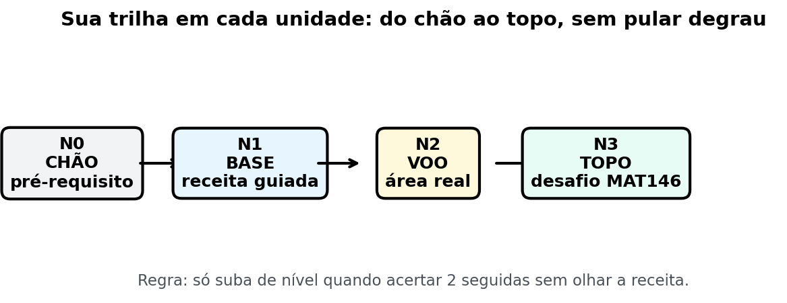
Figura fig14 — Trilha de níveis N0 a N3. Descrição: escada com 4 degraus ilustrados com o curral: N0 um bezerro solto, N1 balança com ficha, N2 caderno com tabela do rebanho, N3 piquete cheio com selo de decisão da Vaquera Ana. Leitura: comece sempre no N0 da unidade. N2 sempre pede tabela ou unidade explícita (kg, L/dia, UA). N3 sempre termina com frase de decisão do tipo "compensa / não compensa porque…".
CAPÍTULO 0 — KIT DE FUNDO (antes do Cálculo)
A Ana abre o caderno novo no curral: "Antes de pesar o lote, a gente confere a balança. Antes do Cálculo, a gente confere a base."
MAPA MENTAL — MAPA MENTAL DO CAPÍTULO 0: fração (pedaço do cocho) → potência (atalho da multiplicação) → raiz (operação inversa) → sinal/parênteses (onde mora metade dos erros) → função-máquina (entrada → saída) → 5 passos para atacar qualquer problema.
0.1 Frações (sem drama)
Analogia da Zootecnia: fração é pedaço do cocho.
Se o cocho tem 4 partes e o lote comeu 3, comeu 3/4.
- Mesmo denominador, somar: 1/4 + 2/4 = 3/4 (soma só o de cima).
- Denominadores diferentes: 1/2 + 1/3 = 3/6 + 2/6 = 5/6 (denominador comum = 6).
- Multiplicar: (2/3) × (9/4) = (2×9)/(3×4) = 18/12 = 3/2 (corta o que dá).
- Dividir = multiplicar pelo inverso: (2/3) ÷ (4/5) = (2/3) × (5/4) = 10/12 = 5/6.
- Expoente negativo vira fração: x⁻² = 1/x².
NADA É ÓBVIO — NADA É ÓBVIO — o que é denominador? Em 3/4, o 4 (denominador) diz em quantas partes dividimos. O 3 (numerador) diz quantas pegamos. Denominador nunca pode ser zero (não dá para dividir o cocho em zero partes).
PAUSA PARA VOCÊ — PAUSA PARA VOCÊ Sem calculadora: quanto é 2/5 + 1/10? Pense no denominador comum 10. Resposta no mini-gabarito do Cap. 0.
ERRO CLÁSSICO — ERRO CLÁSSICO Somar 1/2 + 1/3 como 2/5. Errado! Denominador diferente pede denominador comum. 1/2 + 1/3 = 5/6, não 2/5.
CONEXÃO — CONEXÃO COM SEU CURSO Fração aparece em conversão alimentar, proporção de ingredientes do arraçoamento e taxa por cabeça — tudo com números de exemplo neste livro.
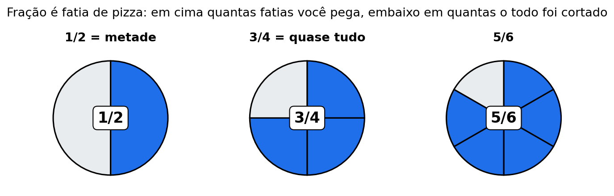
Figura fig08 — Fração é fatia. Descrição: pizza redonda dividida em 8 fatias iguais com 3 fatias destacadas (3/8), ao lado um cocho dividido em partes para mostrar numerador e denominador. Leitura: numerador conta fatias marcadas, denominador conta o total. Toda conta de fração do Cap. 0 pode ser conferida desenhando a pizza ou o cocho fatiado.
0.1b Unidades (kg, L/dia, UA) e leitura de tabelas (não pule!)
Fala da Ana: "Número sem unidade é ficha sem nome do animal. Você não sabe se é quilo, litro ou cabeça. E tabela sem leitura é caderno fechado."
Unidades que você vai ver (todas com número de exemplo):
- kg = quilogramas (peso, ganho, consumo de matéria seca).
- L/dia = litros por dia (produção de leite diária, taxa).
- L = litros acumulados (leite total no período).
- UA = unidade animal de exemplo (medida didática de lotação; referência fictícia da tabela, não parâmetro oficial).
- kg/dia, kg/mês = taxa de ganho ou consumo por tempo.
- m, m² = metros e metros quadrados (cerca e área de piquete).
- dias, meses = tempo do modelo.
Como ler a tabela (3 passos):
- Leia o cabeçalho: o que é cada coluna e qual a unidade?
- Leia uma linha por vez: fixe o dia e atravesse a linha até a coluna pedida.
- Responda com número + unidade + dia: "no dia 4 o lote ganhou 1,1 kg/dia (número de exemplo)".
PAUSA PARA VOCÊ — PAUSA PARA VOCÊ Na tabela abaixo, qual foi o leite do dia 3? _____ L/dia (número de exemplo). E quantas UA havia no dia 6? _____ UA (número de exemplo). Respostas: 13,0 L/dia e 9,0 UA.
ERRO CLÁSSICO — ERRO CLÁSSICO Somar colunas com unidades diferentes (kg + L/dia). Unidade diferente não soma. Confira a etiqueta antes de somar.
TABELA DE DADOS FICTÍCIOS DO REBANHO EXEMPLO (12 linhas fictícias)
Todos os valores abaixo são números de exemplo (fictícios, criados para treinar conta e leitura de tabela). Nenhum dado oficial, parâmetro de manejo, exigência nutricional, taxa biológica real ou recomendação técnica é afirmado aqui.
| Dia | Peso médio do lote (kg, exemplo) | Ganho do dia (kg/dia, exemplo) | Consumo MS do dia (kg/dia, exemplo) | Leite do dia (L/dia, exemplo) | UA no piquete (UA, exemplo) |
|---|---|---|---|---|---|
| 1 | 210,0 | 0,8 | 6,2 | 12,0 | 8,0 |
| 2 | 210,8 | 0,9 | 6,4 | 12,5 | 8,0 |
| 3 | 211,7 | 1,0 | 6,5 | 13,0 | 8,5 |
| 4 | 212,7 | 1,1 | 6,8 | 13,2 | 8,5 |
| 5 | 213,8 | 1,0 | 7,0 | 12,8 | 9,0 |
| 6 | 214,8 | 0,9 | 7,1 | 12,4 | 9,0 |
| 7 | 215,7 | 1,2 | 7,3 | 13,5 | 9,5 |
| 8 | 216,9 | 1,1 | 7,5 | 14,0 | 9,5 |
| 9 | 218,0 | 0,8 | 7,2 | 13,8 | 10,0 |
| 10 | 218,8 | 0,9 | 7,4 | 13,0 | 10,0 |
| 11 | 219,7 | 1,0 | 7,6 | 12,6 | 10,5 |
| 12 | 220,7 | 1,1 | 7,8 | 13,4 | 10,5 |
Leitura da tabela: cada linha é um dia fictício do Curral do Capim-Manso. As trilhas N2 das Unidades 1 a 5 usam esta tabela: você vai buscar, somar, tirar média e comparar dias. Dica da Ana: tampe a tabela com a mão e destampe só a linha pedida. Tabela grande assusta; linha única resolve.
0.2 Potências (expoentes)
Analogia: potência é atalho.
x³ = x·x·x. Em vez de escrever três vezes, escrevemos o 3 em cima.
| Regra | Exemplo (número de exemplo) |
|---|---|
| Multiplicar mesma base: soma expoentes | x² · x³ = x⁵ |
| Dividir mesma base: subtrai expoentes | x⁵ ÷ x² = x³ |
| Potência de potência: multiplica expoentes | (x²)³ = x⁶ |
| Expoente 0 | x⁰ = 1 (x ≠ 0) |
| Denominador = expoente negativo | 1/x³ = x⁻³ |
| Raiz = expoente fracionário | √x = x^(1/2) |
Regra de ouro do Cálculo I: a derivada de xⁿ é n·x^(n−1) (desce o número na frente e diminui 1 no expoente). Você vai usá-la mil vezes.
NADA É ÓBVIO — NADA É ÓBVIO — por que x⁰ = 1? Porque x³ ÷ x³ = 1 (qualquer número dividido por ele mesmo). Pela regra de subtrair expoentes: x³⁻³ = x⁰. Logo x⁰ tem que ser 1 para a regra continuar valendo.
CURIOSIDADE — CURIOSIDADE Potência e raiz são operações inversas, como encher e esvaziar o bebedouro. Uma desfaz a outra — por isso √x = x^(1/2).
PAUSA PARA VOCÊ — PAUSA PARA VOCÊ Sem olhar: x⁴ · x² = ? E (x³)² = ? Confira: x⁶ e x⁶. Se errou, releia a tabela acima.
0.3 Raiz quadrada
- √36 = 6 porque 6 × 6 = 36.
- √(a·b) = √a · √b → √50 = √(25·2) = 5√2.
- Conjugado (amigo da racionalização): (√A − √B) · (√A + √B) = A − B. Exemplo: (√7 − 2)(√7 + 2) = 7 − 4 = 3.
Analogia da Ana: raiz é descobrir o lado do piquete quadrado.
Se o piquete quadrado tem área 36 m² (número de exemplo), o lado é √36 = 6 m.
NADA É ÓBVIO — NADA É ÓBVIO — raiz de número negativo? Neste livro (Cálculo I real), √ de número negativo não é número real. Se aparecer √(−4), algo saiu errado no passo anterior — volte e confira o sinal.
ERRO CLÁSSICO — ERRO CLÁSSICO √(a + b) NÃO é √a + √b. Exemplo: √(9 + 16) = √25 = 5, mas √9 + √16 = 3 + 4 = 7. Diferente!
0.4 Sinal e parênteses (onde mora metade dos erros)
A Ana jura: metade das provas perdidas é sinal, não Cálculo.
- −(3 − 5) = −3 + 5 = 2 (troca o sinal de tudo dentro).
- (−2)² = 4, mas −2² = −4 (o quadrado só cobre o 2 se não houver parênteses).
- Ao expandir: −x(x − 3) = −x² + 3x (não é −3x).
NADA É ÓBVIO — NADA É ÓBVIO — por que menos com menos dá mais? Pense em dívida: tirar uma dívida (−(−3)) é ganhar 3. Na reta numérica, o "−" manda virar de direção. Virar duas vezes volta ao sentido original.
PAUSA PARA VOCÊ — PAUSA PARA VOCÊ Expanda: −2(x − 5). Resposta: −2x + 10. Se você escreveu −2x − 10, anote na errata: "sinal de parêntese".
ERRO CLÁSSICO — ERRO CLÁSSICO −2² vs (−2)². Sem parênteses, o expoente vale só para o 2. Com parênteses, vale para o −2 inteiro. Prova adora cobrar isso.
0.5 Função em 20 segundos (a máquina)
Função = máquina de transformar entrada em saída.
- Entrada: t ou x (dias, meses, cabeças, kg…).
- Saída: f(t) (peso, consumo, taxa, área…).
- Exemplo (número de exemplo): P(t) = 10 + 2t. Entrada t = 5 → saída P(5) = 10 + 10 = 20.
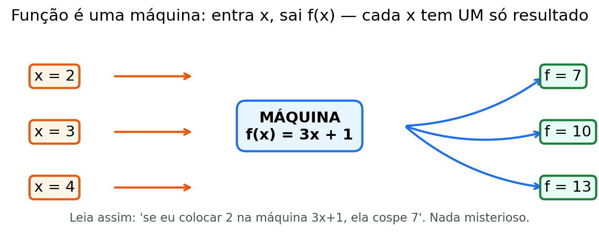
Nomenclatura de campo na mesma frase:
- Peso acumulado = o que a função devolve (total já ganho).
- Taxa de ganho = a derivada (quanto muda agora).
- Média do período = (total no fim − total no início) ÷ tempo — não é a derivada (cuidado!).
NADA É ÓBVIO — NADA É ÓBVIO — f(t) não é multiplicação P(t) não é P vezes t. É "P aplicada em t". P é o nome da máquina; t é o que entra nela. P(5) = valor da máquina P quando entra 5.
CONEXÃO — CONEXÃO COM SEU CURSO P(t) = peso acumulado até o mês t. C(x) = consumo total para x cabeças. L(t) = leite acumulado até o dia t. A(x) = área do piquete quando um lado mede x. Mesma ideia de máquina, quatro currículos diferentes.
CURIOSIDADE — CURIOSIDADE Toda fórmula deste livro é uma máquina. Derivar é perguntar "a que velocidade a máquina cospe saída agora?". Integrar é perguntar "se eu somar todas as saídinhas, quanto acumula?".
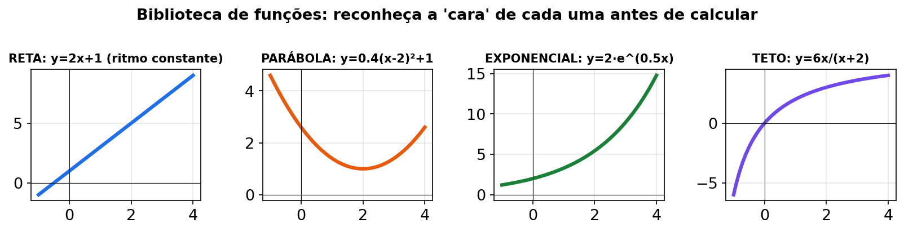
Figura fig15 — Biblioteca de funções. Descrição: prateleira do paiol com "livros-função" encostados: linha reta (linear, ex. peso 10+2t), parábola (quadrática, ex. área 60x−x²), curva de teto (racional, ex. 500t/(t+20)) e curva disparando (exponencial, ex. 20e^(0,1t)), cada livro com etiqueta de entrada e saída. Leitura: antes de derivar ou integrar, identifique em qual "livro" sua fórmula está. Cada tipo tem ferramenta própria: reta é fácil, parábola vira vértice, teto pede limite e disparo pede e^(kt).
0.6 Os 5 passos para atacar um problema
Use sempre. Em qualquer unidade.
- Ler e marcar. O que é entrada? O que é saída? Unidade (kg, ha, %, dose, dias)?
- Escolher a ferramenta. "Perto de um ponto/assíntota"? → limite. "Quanto varia agora"? → derivada. "Qual o melhor ponto"? → derivada + sinal. "Quanto acumulou"? → integral. "Cresce/decai junto com o que tem"? → dy/dx = ky.
- Escrever a expressão ANTES de calcular. Símbolo na página > cálculo na cabeça.
- Calcular devagar. Uma linha por passo. Sinal e parênteses separados.
- Responder com frase. Número solto não é resposta: "a taxa de ganho é 8 kg/mês (número de exemplo) no 6º mês".
Quando travar: faça o passo 1 em voz alta. Se não souber a ferramenta, volte ao mapa do Sumário.
PAUSA PARA VOCÊ — PAUSA PARA VOCÊ Pegue o Exemplo 1 da Unidade 1 (já adianto: P(t) = 10 + 2t + 0,1t²) e sublinhe: qual é a entrada? qual é a saída? qual é a unidade? Treinar o passo 1 agora economiza 20 minutos na prova.
0.7 Mini-exercícios do Kit (10) + gabarito
Faça de cabeça ou no caderno. Depois confira.
M1. 1/4 + 2/4 = ?
M2. 1/2 + 1/3 = ?
M3. (2/3) × (9/4) = ?
M4. (2/3) ÷ (4/5) = ?
M5. x² · x³ = ? E x⁵ ÷ x² = ?
M6. (x²)³ = ? E √x em forma de potência = ?
M7. √49 = ? E √72 simplificado (use 36·2) = ?
M8. −(4 − 7) = ? E −x(x − 3) expandido = ?
M9. (−3)² = ? E −3² = ?
M10. P(t) = 10 + 2t (número de exemplo). Calcule P(5) e P(0). O que significa cada um?
Mini-gabarito comentado:
- M1 → 3/4. Mesmo denominador, soma o de cima.
- M2 → 5/6. Denominador comum 6: 3/6 + 2/6.
- M3 → 3/2. (2×9)/(3×4) = 18/12 = 3/2.
- M4 → 5/6. Inverte e multiplica: (2/3)×(5/4) = 10/12 = 5/6.
- M5 → x⁵ e x³. Multiplicar soma; dividir subtrai.
- M6 → x⁶ e x^(1/2). Potência de potência multiplica; raiz é expoente fracionário.
- M7 → 7 e 6√2. √49 = 7; √72 = √(36·2) = 6√2.
- M8 → 3 e −x² + 3x. −(4−7) = −4+7 = 3; cuidado com o sinal do segundo termo.
- M9 → 9 e −9. Parênteses mudam tudo.
- M10 → P(5) = 20; P(0) = 10. P(0) é o valor inicial (peso de partida, número de exemplo); P(5) é o acumulado até t = 5. A diferença P(5) − P(0) = 10 é o ganho no período.
ERRO CLÁSSICO — ERRO CLÁSSICO DO CAP. 0 Pular o Kit "porque já sei". Multirrepetente experiente refaz o Kit em 30 minutos e economiza 3 horas nas Unidades 2–4. A Ana confere a balança antes de pesar. Confira a base antes de derivar.
UNIDADE 1 — LIMITES E CONTINUIDADE
Abertura no curral fictício
Manhã no Curral do Capim-Manso. A Ana olha a ficha do lote (números de exemplo): mês 3, mês 4, mês 5… O peso sobe, mas cada mês sobe menos. "Será que esse lote tem um teto? Será que uma hora estabiliza?"
O vizinho diz: "No mês 4 deu pulo estranho na planilha." A Ana desconfia: "Pulo? Peso não teleporta. Ou a balança errou, ou a fórmula quebrou."
Nesta unidade você aprende a responder as duas perguntas com limite: (1) para onde a curva tende; (2) se a curva é contínua (sem pulo).
MAPA MENTAL — MAPA MENTAL DA UNIDADE 1 Limite = "para onde vai QUANDO CHEGA PERTO". Substituição direta (polinômio) → 0/0 (fatora e cancela) → infinito (olha o maior expoente) → continuidade (esquerda = direita = valor). Ideia de campo: peso máximo assintótico (teto) + curva sem pulo.
DIÁRIO DA VAQUERA ANA — aprendendo junto com você Hoje no Curral do Capim-Manso eu vi 0/0 na conta do ganho e escrevi "0" na ficha (números de exemplo). Errei: 0/0 não é zero, é pedido de álgebra — tive que fatorar e cancelar. Corrigi com a receita: substituí, fatorei (x-5)(x+5), cancelei e substituí de novo. Conselho: se der 0/0, largue a calculadora e fatore; anote "0/0 pede álgebra" na errata.
(1) Do que se trata
Limite = o que uma função tende a dar quando a entrada se aproxima de um ponto — sem precisar (às vezes) chegar nele.
Notação: lim (t→a) P(t) = L significa: "quando t chega perto de a, P(t) chega perto de L".
Limite existe quando a beirada da esquerda e da direita concordam.
Continuidade = a curva sem buraco e sem pulo no ponto (um ganho de peso não "teleporta" de um valor para outro).
Limite no infinito = o que acontece quando t cresce sem parar. Muitas curvas de crescimento estabilizam num peso máximo (isso se chama assíntota).
NADA É ÓBVIO — NADA É ÓBVIO — "tende a" não é "é igual a" Dizer que G(t) tende a 450 kg (número de exemplo) quando t → ∞ não significa que o lote pesa 450 kg algum dia. Significa que chega cada vez mais perto, sem passar do teto. Assíntota é teto que se aproxima, não porta que se atravessa.
PAUSA PARA VOCÊ — PAUSA PARA VOCÊ P(t) = 10 + 2t. Quando t chega perto de 4, P(t) chega perto de quanto? (Substitua: 10 + 8 = 18.) Isso é limite direto. Fácil assim começa.
CURIOSIDADE — CURIOSIDADE O símbolo lim (t→a) foi inventado para falar de "quase" com rigor. O Cálculo inteiro nasce desse "quase": taxa média com intervalo quase zero vira derivada (Unidade 2).
CONEXÃO — CONEXÃO COM SEU CURSO Curva de crescimento com teto assintótico, vizinhança da melhor dose, relação consumo/peso que estabiliza — tudo é limite. Você não precisa decorar parâmetro real; precisa reconhecer o formato "estabiliza num teto".
(2) Por que importa no seu curso
| Ideia do limite | Onde aparece em Zootecnia |
|---|---|
| "Perto de um ponto" | Ganho quase em um determinado mês; vizinhança da melhor dose |
| "Estabiliza num teto" | Peso máximo assintótico do lote (a curva de crescimento nunca passa do teto) |
| "Sem pulo" (continuidade) | Curvas de crescimento/desempenho sem descontinuidade brusca |
| "Quase dividir por zero" | Taxas médias que viram 0/0 quando o intervalo encolhe — a álgebra desindetermina |
ERRO CLÁSSICO — ERRO CLÁSSICO Ver 0/0 e responder "0" ou "não existe". 0/0 é indeterminação: pede álgebra (fatorar/racionalizar), não chute. O limite pode ser 3, 10, 1/4… só a conta diz.
(3) Receita passo a passo
Receita A — limite direto (substituição direta):
- Substitua t por a diretamente.
- Se der número (e não dividir por 0), esse é o limite.
Receita B — indeterminação 0/0 (fatorar):
- Substitua e veja se deu 0/0.
- Fatore numerador e denominador (ou racionalize).
- Cancele o fator comum.
- Substitua de novo.
Receita C — limite no infinito (razão de polinômios):
- Olhe o maior expoente do numerador e do denominador.
- Expoentes iguais: limite = razão dos coeficientes do maior termo.
- Numerador "menor": limite = 0.
- Numerador "maior": limite = ∞ (não estabiliza).
Receita D — continuidade:
- Calcule o limite pela esquerda (valores menores que a).
- Calcule o limite pela direita (valores maiores que a).
- Para ser contínua: esquerda = direita = valor da função. Use isso para achar incógnitas (letra a).
PAUSA PARA VOCÊ — PAUSA PARA VOCÊ lim (t→∞) (3t² + t)/(2t² + 7). Antes de ler o gabarito: maior expoente dos dois lados? (2.) Razão dos coeficientes? (3/2.) Pronto, você já sabe a Receita C.
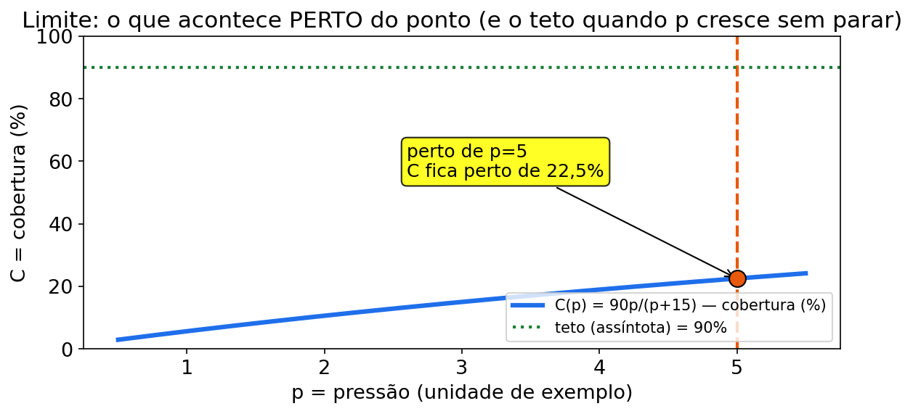
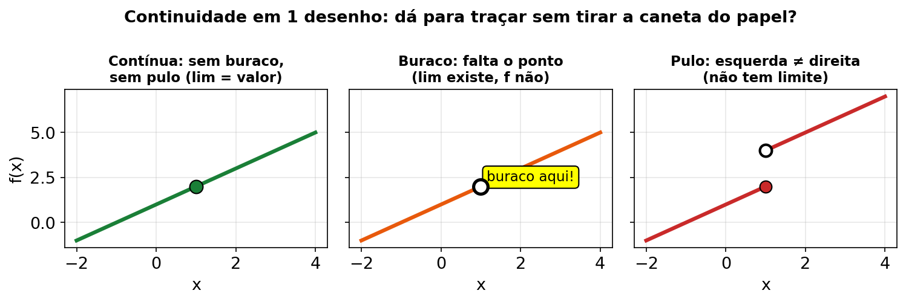
Figura fig09 — Continuidade 3 casos. Descrição: três painéis lado a lado: curva lisa sem pulo (contínua, ganho sem salto), curva com buraco aberto (limite existe mas falta o ponto da pesagem), curva com degrau (pulo, laterais diferentes no mês da troca de balança). Leitura: só o primeiro painel é contínuo. Buraco pede completar o ponto; degrau pede igualar laterais como no Exemplo 4 do ganho sem pulo.
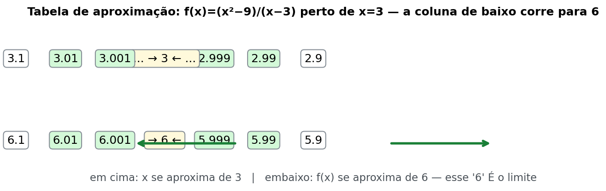
Figura fig17 — Tabela de aproximação. Descrição: caderno da Ana com tabela de dois lados (3,9 | 3,99 | 4 | 4,01 | 4,1) mostrando P(t) chegando por baixo e por cima em direção a um mesmo valor central, com setas convergindo para L e balança do curral ao lado. Leitura: monte sempre a tabela com valores menores E maiores que o ponto (ex.: 3,9 e 4,1). Se os dois lados apontam para o mesmo número, o limite existe — e a tabela é sua prova visual.
(4) Exemplos resolvidos
Exemplo 1 — Ganho "quase" no mês 4 (limite direto) (número de exemplo)
Ganho acumulado (kg): P(t) = 10 + 2t + 0,1t², t em meses.
Pergunta: quanto o lote acumulou quando t chega perto de 4?
Passo 1 — tabela:
| t | P(t) = 10 + 2t + 0,1t² | Cálculo |
|---|---|---|
| 3,9 | 19,501 | 10 + 7,8 + 1,521 |
| 3,99 | 19,95001 | (calculadora) |
| 4 | 20 | 10 + 8 + 1,6 |
| 4,01 | 20,05001 | (calculadora) |
| 4,1 | 20,501 | 10 + 8,2 + 1,681 |
Passo 2 — padrão: os dois lados se encolhem em direção a 20.
Resposta: lim (t→4) P(t) = 20 (número de exemplo). Como é polinômio, bastou substituir.
Exemplo 2 — Média que encolhe: o "germe" da taxa de ganho (0/0) (número de exemplo)
Peso acumulado: P(t) = t² + 3t (kg). Estudamos:
lim (h→0) [P(h) − P(0)] / h
Passo 1 — P(0): 0 + 0 = 0. Passo 2 — substituir: (h² + 3h)/h. Em h = 0: 0/0 (indeterminado). Passo 3 — fatorar: h(h + 3)/h = h + 3 (h ≠ 0). Passo 4 — substituir: 0 + 3 = 3.
Resposta: limite = 3 kg/mês (número
de exemplo, se t estiver em meses). No instante inicial, a
taxa média de ganho se aproxima de 3 kg por mês; esse é o começo da
derivada da U2.
Exemplo 3 — Peso máximo assintótico (limite no infinito) (número de exemplo)
Ganho acumulado de um lote: G(t) = 450t / (t + 10) (kg), t em meses.
Passo 1 — tabela:
- t = 10: G = 4500/20 = 225
- t = 40: G = 18000/50 = 360
- t = 90: G = 40500/100 = 405
Passo 2 — padrão: cresce, mas cada vez menos (ganha +135, depois +45…).
Passo 3 — limite (razão de polinômios): dividindo tudo por t: 450/(1 + 10/t) → 450/1 = 450.
Resposta: G(t) tende a 450 kg (número de exemplo) quando t → ∞. "Tende a" ≠ "chega exatamente" — é o conceito de assíntota / peso máximo teórico.
Exemplo 4 — Continuidade: o ganho não pode dar "pulo" (número de exemplo)
P(t) = t² + 1, se t < 2; P(t) = at + 4, se t ≥ 2.
Passo 1 — esquerda: lim (t→2⁻) t² + 1 = 4 + 1 = 5. Passo 2 — direita: lim (t→2⁺) at + 4 = 2a + 4. Passo 3 — igualar: 2a + 4 = 5 → 2a = 1 → a = 0,5.
Resposta: a = 0,5 (número de exemplo). Sem isso, a curva "pularia" de um valor para outro no mês 2 — biologicamente/modelagem, indesejado.
Exemplo 5 — Relação que se estabiliza (razão de polinômios) (número de exemplo)
lim (t→∞) (t² + 5t) / (2t² + 7)
Passo 1 — maior expoente: 2 dos dois lados. Passo 2 — razão dos coeficientes: 1/2 = 0,5. Passo 3 — leitura: uma relação (ex.: consumo relativo ao peso) se aproxima de 0,5 no longo prazo (número de exemplo).
Resposta: limite = 0,5.
Exemplo 6 — NOVO: lactação que se aproxima do total (limite direto + leitura) (número de exemplo)
A Ana anota a produção acumulada de leite de uma vaca (números de exemplo):
L(d) = 5 + 1,2d − 0,01d², d em dias de lactação (trecho inicial do modelo didático).
Pergunta: de quanto L(d) se aproxima quando d chega perto de 10?
Passo 1 — substituir: L(10) = 5 + 12 − 0,01·100 = 5 + 12 − 1 = 16. Passo 2 — tabela de vizinhança (confira com calculadora):
| d | L(d) |
|---|---|
| 9,9 | 15,8999 |
| 9,99 | 15,989999 |
| 10 | 16 |
| 10,01 | 16,009999 |
| 10,1 | 16,0999 |
Passo 3 — leitura: os dois lados miram 16.
Resposta: lim (d→10) L(d) = 16 L (número de exemplo). Por ser polinômio, é contínuo: o limite é o valor no ponto. No modelo, a curva não apresenta um salto entre os dias vizinhos.
ERRO CLÁSSICO — ERRO CLÁSSICO (revisão da unidade) Achar que "limite no infinito = número gigante". Não. Limite no infinito pergunta o teto, não o gigante. Em G(t) = 450t/(t+10), o limite é 450 — finito e estabilizado.
CURIOSIDADE — CURIOSIDADE Assíntota horizontal é o "teto de vidro" da curva: ela vê o teto, chega perto, mas não fura. Em crescimento animal didático, o teto representa o peso máximo teórico do modelo — não uma promessa biológica.
GUIA PASSO A PASSO — limite: teto e pulo no ganho de peso
Problema novo do Curral do Capim-Manso (números de exemplo): o lote Silagem-Alta tem ganho acumulado G(t) = 500t/(t+20) (kg), t em meses. A Ana quer o teto do modelo e conferir se a ficha mensal tem pulo em t = 4.
Faça junto com a Ana, um passo por linha:
- Ler e marcar: entrada t (meses), saída G (kg acumulados). Pergunta 1: "para onde G vai quando t cresce muito?" Ferramenta: limite no infinito (Receita C).
- Escrever a expressão antes de calcular: lim (t→∞) 500t/(t+20).
- Sondar no campo: G(30) = 500·30/(30+20) = 15000/50 = 300 kg; G(80) = 40000/100 = 400 kg. Ainda sobe — então o "maior valor da planilha" NÃO é o teto.
- Dividir numerador e denominador por t: (500t/t)/((t+20)/t) = 500/(1 + 20/t).
- Olhar o pedacinho que morre: quando t→∞, 20/t → _____.
- Fechar a conta: 500/(1 + 0) = 500 → teto = _____ kg.
- Responder com frase: "o ganho acumulado beira 500 kg sem precisar chegar (número de exemplo) — assíntota horizontal em 500 kg".
- Agora o pulo: a ficha mensal do mesmo lote é W(t) = 2t se t ≤ 4; W(t) = bt + 1 se t > 4 (kg, exemplo). Pela esquerda em t = 4: W = 2·4 = _____ kg.
- Pela direita: W = b·4 + 1 = 4b + 1.
- Sem pulo = laterais iguais: 4b + 1 = 8 → 4b = 7 → b = _____.
- Teste do susto: se b = 2, a direita dá 2·4+1 = 9 e a esquerda 8 → pulo de +1 kg do nada (número de exemplo): ficha não contínua, revisar balança/fórmula no mês 4.
- Frase final com unidade: "teto de 500 kg e b = 1,75 para o ganho não pular em t = 4 (números de exemplo)".
Lacunas para preencher no caderno:
- Passo 5: 20/t → _____
- Passo 6: teto = _____
- Passo 8: W pela esquerda em t = 4 = _____
- Passo 10: b = _____
Checklist (marque quando fizer):
- Escrevi o limite antes de calcular (passo 2).
- Dividi numerador E denominador por t (passo 4).
- Respondi o teto com frase + unidade (passo 7).
- Comparei esquerda e direita antes de falar "sem pulo" (passos 8–10).
Gabarito do guia (abrir depois de tentar)
- Passo 5: 20/t → 0 quando t→∞ (pedaço que morre).
- Passo 6: teto = 500 kg (número de exemplo).
- Passo 8: W(4⁻) = 2·4 = 8 kg.
- Passo 10: 4b + 1 = 8 → b = 1,75. Com b = 1,75 a ficha é contínua em t = 4; com b = 2 há pulo de +1 kg.
- Frase-pronta: "o ganho tende a 500 kg e, com b = 1,75, a ficha mensal não pula (números de exemplo)".
(5) Você faz — 8 exercícios (6 originais + 2 novos)
Ex1. Limite direto: lim (x→3) (4x − 2) = ?
Ex2. Fatorar: lim (x→5) (x² − 25)/(x − 5) = ?
Ex3. No infinito: lim (t→∞) (3t² + t)/(2t² + 7) = ?
Ex4. Racionalizar: lim (t→0) (√(t+4) − 2)/t = ?
Ex5. Continuidade: P(t) = t² + 2, se t < 3; P(t) = mt + 5, se t ≥ 3. Qual m para P ser contínua em t = 3?
Ex6. Limites laterais: f(x) = 2x + 1, se x < 1; f(x) = x² + 3, se x ≥ 1. Calcule limite pela esquerda, pela direita; o limite existe em x = 1? O que isso diria sobre uma curva de desempenho?
Ex7 — NOVO. Arraçoamento "quase" no dia 6 (número de exemplo): consumo acumulado C(t) = 4 + 3t + 0,2t² (kg). Calcule lim (t→6) C(t) por substituição direta e monte uma mini-tabela com t = 5,9 e t = 6,1 para confirmar.
Ex8 — NOVO. Teto do cocho (número de exemplo): lim (t→∞) (200t)/(t + 5). Interprete como "oferta acumulada que estabiliza num teto". Qual o teto? Mostre dividindo numerador e denominador por t.
(6) Gabarito comentado
Ex1 → 10. Substituição direta: 4·3 − 2 = 12 − 2 = 10.
Ex2 → 10. x² − 25 = (x − 5)(x + 5). Cancele (x − 5): sobra x + 5. Substitua: 5 + 5 = 10. Erro clássico: 0/0 na calculadora. 0/0 pede álgebra, não botão.
A Vaquera Ana comenta cada passo:
- Micro-passo 1: escrevo a expressão antes de calcular: lim (x→5) (x²-25)/(x-5) (número de exemplo).
- Micro-passo 2: testo direto x = 5 e acho 0/0 — não é resposta, é aviso de fatorar.
- Micro-passo 3: fatoro o topo: x²-25 = (x-5)(x+5), com x ≠ 5 no cancelamento.
- Micro-passo 4: cancelo (x-5) e fico com a forma simples x+5.
- Micro-passo 5: substituo de novo: 5+5 = 10.
- Micro-passo 6: respondo em frase: "o limite é 10 (número de exemplo); 0/0 pediu álgebra, não botão".
Ex3 → 3/2 (= 1,5). Mesmo expoente (2) → razão dos coeficientes maiores: 3/2.
Ex4 → 1/4. Conjugado: [(√(t+4) − 2)(√(t+4) + 2)] / [t(√(t+4) + 2)] = (t + 4 − 4)/[t(√(t+4)+2)] = t/[t(√(t+4)+2)] = 1/(√(t+4)+2). Em t = 0: 1/(2 + 2) = 1/4.
Ex5 → m = 2. Esquerda: t² + 2 em t = 3 → 9 + 2 = 11. Direita: 3m + 5. Igualar: 3m + 5 = 11 → 3m = 6 → m = 2. Conferência: 2·3 + 5 = 11 .
Ex6 → esquerda = 3; direita = 4; limite NÃO existe. Esquerda: 2·1 + 1 = 3. Direita: 1² + 3 = 4. 3 ≠ 4 → "pulo". Leitura: uma curva de desempenho com salto em x = 1 (números de exemplo) quebraria a ideia de progressão contínua — reveja o modelo naquele ponto.
Ex7 — NOVO → 29,2. C(6) = 4 + 18 + 0,2·36 = 4 + 18 + 7,2 = 29,2 (número de exemplo, kg). Mini-tabela: C(5,9) = 4 + 17,7 + 0,2·34,81 = 4 + 17,7 + 6,962 = 28,662; C(6,1) = 4 + 18,3 + 0,2·37,21 = 4 + 18,3 + 7,442 = 29,742. Os dois miram 29,2. Polinômio é contínuo: limite = valor.
Ex8 — NOVO → 200. Divida por t: 200/(1 + 5/t) → 200/1 = 200 (número de exemplo). Teto de 200 kg no modelo. "Tende a 200" ≠ "atinge 200".
Mini-quiz V/F — Unidade 1
Responda V ou F. Gabarito logo abaixo.
- ( ) Se substituir direto der 0/0, o limite não existe.
- ( ) lim (t→∞) (t²+5t)/(2t²+7) = 0,5.
- ( ) Uma função contínua tem "pulo" no ponto.
- ( ) Em polinômio, lim (t→a) P(t) = P(a).
- ( ) Assíntota horizontal é um teto que a curva se aproxima.
Gabarito: 1-F (0/0 pede álgebra; pode existir — Ex2 deu 10). 2-V. 3-F (contínua = sem pulo). 4-V. 5-V.
CONEXÃO — CONEXÃO COM SEU CURSO (fecho da U1) Quando você vir "peso máximo", "estabiliza", "teto", "sem salto" numa questão de Zootecnia com cara de Cálculo, pense limite. A conta é algébrica; a leitura é zootécnica — e os números continuam sendo de exemplo.
(6b) Trilha N0 → N3 da Unidade 1 — 7 exercícios novos (básico ao complexo)
Fala da Ana: "Antes de decidir o teto do lote, aprenda a beirar. Faça na ordem. N2 abre a tabela do rebanho."
T1 (N0). Com suas palavras: o que é "tender a 450 kg"? É chegar exatamente em 450 kg? Responda em 1 frase com "beirar" (número de exemplo).
T2 (N0). Olhe a fig09: qual painel é contínuo? Qual tem pulo? O que significa "esquerda = direita" em 1 frase?
T3 (N1). lim (t→6) (3t + 5) = ? (substituição direta, número de exemplo).
T4 (N1). lim (x→4) (x² − 16)/(x − 4) = ? Fatore, cancele, substitua (número de exemplo).
T5 (N2 — usa a tabela). Na TABELA DE DADOS FICTÍCIOS
DO REBANHO EXEMPLO, o ganho dos dias 1 a 4 foi
0,8; 0,9; 1,0; 1,1 kg/dia. Calcule a média. Esses quatro
valores bastam para provar que existe um teto? Explique em uma frase
simples.
T6 (N2 — usa a tabela). Na mesma tabela, o leite dos
dias 3, 4 e 8 foi 13,0; 13,2; 14,0 L/dia. Calcule a média
desses três registros. Ela pode ser chamada de limite ou teto sem
conhecer uma função? Justifique em uma frase.
T7 (N3 — desafio). Cocho sem pulo: C(t) = 10 + 4t se t < 6; C(t) = at + 4 se t ≥ 6 (kg, exemplo). Ache a para não ter pulo em t = 6 e diga em frase o que aconteceria com o lote se a fosse 1 unidade maior.
Trilha U1 — gabarito comentado (T1–T7):
- T1 → "tender a 450 kg" = beirar 450 kg sem precisar chegar. Frase modelo: "o ganho beira 450 kg (número de exemplo)".
- T2 → contínuo = curva lisa; pulo = degrau com laterais diferentes. "Esquerda = direita" = sem susto no ponto.
- T3 → 23. 3·6 + 5 = 18 + 5 = 23 (número de exemplo).
- T4 → 8. (x−4)(x+4)/(x−4) = x + 4 → 4 + 4 = 8.
- T5 → média 0,95 kg/dia.
(0,8+0,9+1,0+1,1)/4=3,8/4=0,95. Quatro observações mostram apenas a média do período; não provam um limite nem um teto. Para calcular um limite, é preciso uma função ou regra de crescimento. - T6 → média 13,4 L/dia.
(13,0+13,2+14,0)/3=40,2/3=13,4. Essa média descreve somente os três dias escolhidos. Não pode ser chamada de limite ou teto sem uma regra que diga o que acontece para outros dias. - T7 → a = 5. Esquerda: 10 + 24 = 34. Direita: 6a + 4 = 34 → 6a = 30 → a = 5. Se fosse 6, pulo de +6 kg em t = 6 (exemplo) — oferta que salta do nada.
UNIDADE 2 — DERIVADAS
Abertura no curral fictício
A Ana pesou o lote duas vezes: no mês 0 e no mês 6. A média deu 5 kg/mês (número de exemplo). Mas ela jura que "esse último mês o bicho disparou". A média esconde o agora. Ela precisa do velocímetro, não da média da viagem.
No cocho, outra dúvida: a conversão alimentar (consumo ÷ ganho) melhora até certo ponto e depois piora. "Onde ela vira?" — pergunta que só a derivada responde.
Nesta unidade: taxa instantânea, regras do produto/quociente/cadeia e segunda derivada (acelera ou desacelera?).
MAPA MENTAL — MAPA MENTAL DA UNIDADE 2 Derivada = VELOCÍMETRO (agora, não média). Potência (desce e diminui) → produto (um vigia o outro) → quociente (briga em cima, quadrado embaixo) → cadeia (casca × recheio) → 2ª derivada (aceleração). Campo: taxa de ganho, taxa de consumo, conversão alimentar.
DIÁRIO DA VAQUERA ANA — aprendendo junto com você Ontem no Curral do Capim-Manso eu comemorei a média 5 kg/mês e ignorei o velocímetro 8 kg/mês (números de exemplo). Errei: usei média da viagem como se fosse taxa de hoje. Corrigi separando: média = [P(6)-P(0)]/6; instantânea = P'(6) = t+2 em t=6. Conselho: sublinhe "médio" versus "agora/no dia"; se for "agora", derive e avalie no ponto.
(1) Do que se trata
Derivada = taxa instantânea de variação. Tradução: "se o tempo der mais um passinho, quanto muda o peso agora?"
Notação: f′(x) (lê-se "f linha de x") ou dy/dx ("de y com respeito a x").
Intuição de campo:
- Média do período: (peso final − peso inicial) ÷ dias → ganho médio.
- Instantânea (derivada): o ganho daquele dia exato — como o velocímetro, não a média da viagem.
Geometria: f′(a) é a inclinação da reta tangente (a reta que "encosta" na curva no ponto a). Inclinação positiva → curva sobe; negativa → desce.
PAUSA PARA VOCÊ — PAUSA PARA VOCÊ P(t) = 0,5t² + 2t. Calcule a média de 0 a 6: [P(6)−P(0)]/6. (Dá 5.) Guarde esse 5. Nos exemplos você verá que a instantânea no mês 6 é 8. Média ≠ instantânea. Essa diferença é a unidade inteira.
NADA É ÓBVIO — NADA É ÓBVIO — dy/dx não é fração comum dy/dx é um símbolo único para "derivada de y em relação a x". No Cálculo I, trate como taxa, não como divisão de dois números. (Em EDO, no Cap. 5, a gente vai "separar" dy e dx como truque algébrico — com regra própria.)
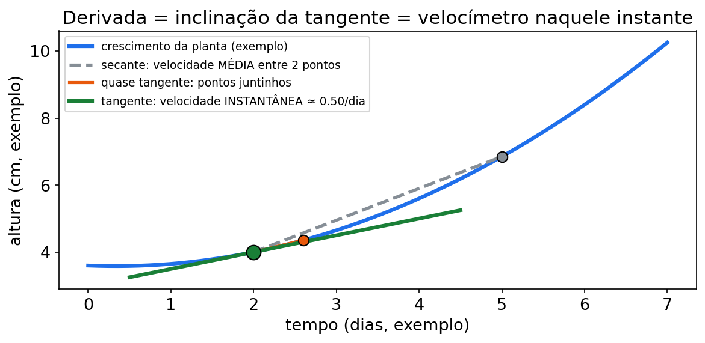
(2) Por que importa no seu curso
- Taxa de ganho de peso = derivada do peso acumulado → "quanto ganhou neste período?"
- Taxa de consumo de matéria seca = derivada do consumo acumulado.
- Conversão alimentar (consumo ÷ ganho) → para ver se melhora ou piora, precisa derivar.
- Taxa de variação de oferta/qualidade → quanto muda "agora" (antes de integrar ou otimizar).
- 2ª derivada → se a taxa acelera ou desacelera (ganho entrando em fase de estagnação).
CONEXÃO — CONEXÃO COM SEU CURSO Conversão alimentar é quociente (consumo/ganho) — por isso a regra do quociente é a queridinha da Zootecnia neste capítulo. Lactação acumulada derivada vira produção diária. Arraçoamento total derivado vira taxa marginal por cabeça.
CURIOSIDADE — CURIOSIDADE O velocímetro do carro é um derivador analógico: ele mede distância acumulada e mostra a taxa agora. A balança do curral mostra o acumulado; a derivada mostra o "velocímetro do ganho".
(3) Receita passo a passo
Fórmula-mãe (potência): se f(x) = xⁿ, então f′(x) = n·xⁿ⁻¹. Em português comum: desce o expoente na frente e diminui 1 no expoente.
Tabela de derivadas básicas:
| Função | Derivada | Tradução |
|---|---|---|
| constante c | 0 | fixo não varia |
| xⁿ | n·xⁿ⁻¹ | regra da potência |
| c·f(x) | c·f′(x) | constante "pegona" |
| soma/diferença | soma/diferença das derivadas | derivar termo a termo |
| eˣ | eˣ | a derivada dela é ela mesma |
| ln x | 1/x | log vira inverso |
Regra do produto (multiplicação): (u·v)′ = u′·v + u·v′ Gancho: "o primeiro vigia enquanto o segundo se mexe, e vice-versa."
Regra do quociente (divisão): (u/v)′ = (u′·v − u·v′)/v² Gancho: "em cima a briga com sinal, embaixo o denominador ao quadrado." (Conversão alimentar é quociente — use esta!)
Regra da cadeia (função dentro de função): se y = f(g(x)), então y′ = f′(g(x)) · g′(x) Gancho: "derive a casca, depois multiplique pela derivada do recheio."
Ordem superior: f″(x) é a derivada da derivada (aceleração da variação).
Ordem dos passos para derivar:
- Identificar o tipo: potência? produto? quociente? aninhada?
- Aplicar UMA regra por vez, sem pressa.
- Simplificar só depois.
- (Se pedirem em um ponto) substituir.
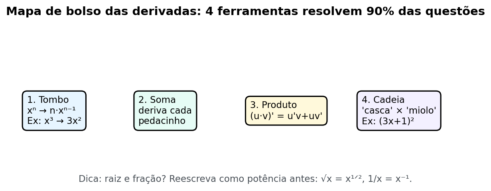
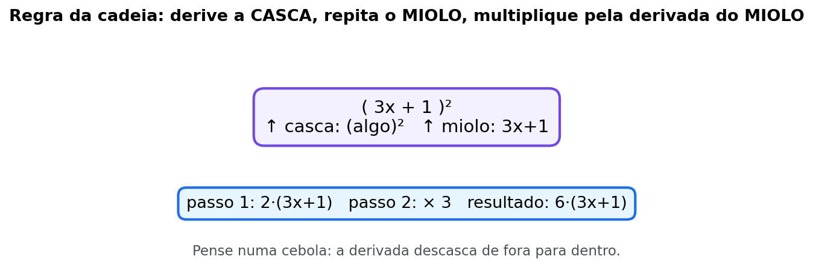
Figura fig10 — Cadeia casca e miolo. Descrição: diagrama de cocho com casca (função externa, ex. potência 3) e miolo (função interna, ex. 0,5t²+4 do consumo) com seta mostrando derivar a casca e multiplicar pelo miolo derivado. Leitura: sempre marque casca e miolo antes de derivar. Esquecer o miolo derivado é o erro clássico da cadeia; confira derivando de volta.
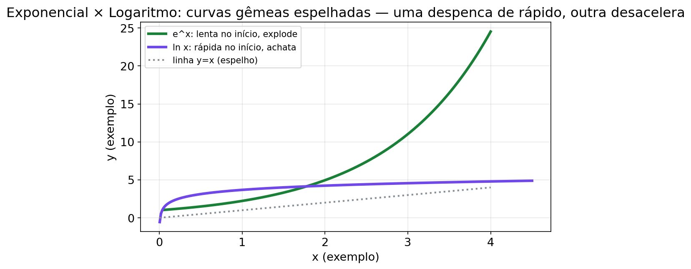
Figura fig18 — Exponencial e log. Descrição: dois painéis: eˣ subindo cada vez mais rápido (peso que dispara no final do ciclo, lacre de = elipse) e ln x subindo devagar e achatando (consumo que cresce mas cada quilo a menos), com a linha y = 1 e o eixo x como "espelho" entre os dois. Leitura: eˣ é a única função cuja derivada é ela mesma (crescimento junto com o que tem); ln x tem derivada 1/x (cresce cada vez mais devagar). Um decai se k < 0, o outro nunca desce.
ERRO CLÁSSICO — ERRO CLÁSSICO Na cadeia, esquecer a derivada do recheio. Em (5t+2)⁷, a resposta não é 7(5t+2)⁶ — é 35(5t+2)⁶ (×5 do recheio). Cadeia sem recheio é cocho sem fundo.
PAUSA PARA VOCÊ — PAUSA PARA VOCÊ Classifique antes de derivar: (a) 3t² − 4t → ? (b) (t+2)(t²+1) → ? (c) (x²+64)/x → ? (d) (0,5t²+4)³ → ? Respostas: (a) potência/soma, (b) produto, (c) quociente, (d) cadeia. Se acertou as 4, a receita já é sua.
(4) Exemplos resolvidos
Exemplo 1 — Taxa de ganho de peso com potência (número de exemplo)
Peso acumulado (kg): P(t) = 0,5t² + 2t, t em meses.
Passo 1 — derivar:
- 0,5t² → 0,5 · 2 · t¹ = t
- 2t → 2
Passo 2 — juntar: P′(t) = t + 2.
Passo 3 — no mês 6: P′(6) = 6 + 2 = 8.
Resposta: a taxa de ganho no 6º mês é 8 kg/mês (número de exemplo) — não a média. Média de 0 a 6: [P(6) − P(0)]/6 = (18 + 12 − 0)/6 = 30/6 = 5. Média 5 ≠ instantânea 8 — essa é a diferença central da unidade.
Exemplo 2 — Regra do produto: tamanho × consumo unitário (número de exemplo)
Oferta total: O(t) = (t + 2)(t² + 1) (unidades de oferta por período).
Passo 1 — marcar: u = t + 2 → u′ = 1; v = t² + 1 → v′ = 2t.
Passo 2 — u′v + uv′: O′(t) = 1·(t² + 1) + (t + 2)·2t = t² + 1 + 2t² + 4t = 3t² + 4t + 1.
Passo 3 — ponto: O′(0) = 1 (número de exemplo).
Resposta: O′(t) = 3t² + 4t + 1. Leitura: a oferta total cresce mais rápido que cada fator sozinho.
Exemplo 3 — Conversão alimentar (regra do quociente) (número de exemplo)
Conversão alimentar: CA(x) = (x² + 64)/x (kg de ração por kg de ganho — número de exemplo).
Passo 1 — marcar: u = x² + 64 → u′ = 2x; v = x → v′ = 1.
Passo 2 — (u′v − uv′)/v²: CA′(x) = [2x·x − (x² + 64)] / x² = (2x² − x² − 64)/x² = (x² − 64)/x².
Passo 3 — onde zera? x = 8 (x > 0). Para x < 8: CA′ < 0 (conversão caindo = melhorando). Para x > 8: CA′ > 0 (subindo = piorando).
Resposta: a conversão alimentar melhora até x = 8 e depois piora (número de exemplo) — o "ponto ótimo" será formalizado na U3.
Exemplo 4 — Regra da cadeia: consumo "por camadas" (número de exemplo)
C(t) = (0,5t² + 4)³.
Passo 1 — camadas: casca = (…)³; recheio = 0,5t² + 4.
Passo 2 — casca: 3(0,5t² + 4)² (o recheio fica igual por enquanto).
Passo 3 — recheio: (0,5t² + 4)′ = t.
Passo 4 — juntar: C′(t) = 3(0,5t² + 4)² · t = 3t(0,5t² + 4)².
Resposta: C′(t) = 3t(0,5t² + 4)². Erro clássico: esquecer o t do recheio. Cadeia sempre multiplica pela derivada do recheio.
Exemplo 5 — Segunda derivada: o ganho está acelerando? (número de exemplo)
P(t) = t³ − 6t² + 9t + 10.
Passo 1: P′(t) = 3t² − 12t + 9. Passo 2: P″(t) = 6t − 12. Passo 3 — interpretação: P″(2) = 0 (mudança de ritmo); P″(t) > 0 quando t > 2 → acelera; P″(t) < 0 quando t < 2 → desacelera.
Resposta: P″(t) = 6t − 12 (número de exemplo). É o "pedal" da taxa de ganho.
Exemplo 6 — NOVO: taxa de lactação diária (potência + leitura) (número de exemplo)
Leite acumulado (litros, número de exemplo): L(d) = 4d + 0,3d², d em dias.
Passo 1 — derivar: L′(d) = 4 + 0,6d. Passo 2 — no dia 10: L′(10) = 4 + 6 = 10 litros/dia. Passo 3 — média de 0 a 10: [L(10)−L(0)]/10 = (40+30)/10 = 7 litros/dia.
Resposta: a taxa no dia 10 é 10 L/dia (número de exemplo), maior que a média 7 L/dia. Tradução da Ana: "a média diz que foi bem; a derivada diz que AGORA está voando." Segunda derivada L″ = 0,6 > 0: a taxa diária ainda acelera neste trecho do modelo.
CURIOSIDADE — CURIOSIDADE Derivada segunda positiva = curva "sorriso" (côncava para cima). Negativa = curva "triste" (côncava para baixo). O lote que desacelera faz curva triste — e a U3 vai usar isso para dizer se o ponto ótimo é máximo ou mínimo.
GUIA PASSO A PASSO — derivada: mínimo da conversão alimentar
Problema novo do Curral do Capim-Manso (números de exemplo): no lote Conversão-X, o consumo diário é C(x) = 0,5x² + 10x + 50 (kg) e o ganho diário é G(x) = 2x (kg), com x cabeças no cocho. Onde a conversão alimentar CA(x) = C(x)/G(x) é mínima?
Faça junto com a Ana, um passo por linha:
- Ler e marcar: entrada x (cabeças), saída CA (kg de ração por kg de ganho — número de exemplo). Ferramenta: quociente + otimização.
- Escrever antes de calcular: CA(x) = (0,5x² + 10x + 50)/(2x), x > 0.
- Simplificar primeiro (divide termo a termo): 0,5x²/2x = 0,25x; 10x/2x = 5; 50/2x = 25/x → CA(x) = 0,25x + 5 + 25/x.
- Derivar termo a termo: (0,25x)′ = 0,25; (5)′ = 0; (25/x)′ = (25x⁻¹)′ = −25x⁻² = −25/x².
- Escrever a derivada: CA′(x) = 0,25 − 25/x².
- Zerar (procurar candidato): 0,25 − 25/x² = 0 → 25/x² = 0,25 → x² = 25/0,25 = 100 → x* = _____ (x > 0).
- Provar o sinal (antes): x = 5 → 0,25 − 25/25 = 0,25 − 1 = −0,75 (CA está caindo).
- Provar o sinal (depois): x = 20 → 0,25 − 25/400 = 0,25 − 0,0625 = +0,1875 (CA está subindo).
- Veredito do sinal: caiu e depois subiu (−→+) → mínimo . Atalho com 2ª derivada: CA″(x) = 50/x³ > 0 para x > 0 → sorriso → mínimo confirmado.
- Calcular o VALOR (não parar no x!): CA(10) = 0,25·10 + 5 + 25/10 = 2,5 + 5 + 2,5 = CA(x*) = _____.
- Checagem de campo: CA(8) = 2 + 5 + 3,125 = 10,125 (acima de 10); CA(12) = 3 + 5 + 2,083 = 10,083 (acima de 10). Os vizinhos piores confirmam o mínimo.
- Responder com frase: "a conversão é mínima com 10 cabeças, CA = 10 kg/kg (números de exemplo) — depois disso cada cabeça piora a eficiência".
Lacunas para preencher no caderno:
- Passo 3: CA(x) = 0,25x + 5 + _____
- Passo 6: x* = _____
- Passo 10: CA(x*) = _____
- Passo 9: tipo de ponto = _____ (máximo / mínimo / nenhum)
Checklist (marque quando fizer):
- Simplifiquei o quociente antes de derivar (passo 3).
- Derivei termo a termo, incluindo o 25/x (passo 4).
- Zerei E conferi o sinal dos dois lados (passos 6–8).
- Calculei o valor ótimo CA(x*), não só o x* (passo 10).
Gabarito do guia (abrir depois de tentar)
- Passo 3: CA(x) = 0,25x + 5 + 25/x (número de exemplo).
- Passo 6: x² = 100 → x* = 10 cabeças.
- Passo 9: mínimo (sinal −→+ e CA″ = 50/x³ > 0).
- Passo 10: CA(10) = 2,5 + 5 + 2,5 = 10 kg de ração por kg de ganho (número de exemplo).
- Frase-pronta: "a conversão mínima do lote é 10, em 10 cabeças; antes disso melhora, depois piora (números de exemplo)".
(5) Você faz — 10 exercícios (8 originais + 2 novos)
Ex1. P(t) = 3t² − 4t. Ache P′(t) e P′(5) (taxa de ganho no mês 5).
Ex2. f(x) = 0,1x³ + 2x². Ache f′(x) e f′(10).
Ex3. Produto: (t² − 9)(t + 5). Ache a derivada e o valor em t = 1.
Ex4. Oferta: (20 − t)(2 + 0,5t). Ache a derivada pelo produto e avalie em t = 3.
Ex5. Conversão: (t² + 16)/t. Ache a derivada (quociente) e avalie em t = 4.
Ex6. Cadeia: (5t + 2)⁷. Ache a derivada e avalie em t = 0.
Ex7. Raiz (cadeia): f(t) = √(9t² + 16). Ache f′(1). (Dica: √u = u^(1/2).)
Ex8. Exponencial: f(t) = e^(2t) + t². Ache f′(t) e f′(0). (Use (e^(kt))′ = k·e^(kt).)
Ex9 — NOVO. Lotação e arraçoamento (potência, número de exemplo): consumo acumulado C(x) = 2x² + 5x (kg), x = cabeças. Ache C′(x) e C′(10). Interprete: o que significa C′(10)?
Ex10 — NOVO. Quociente da lactação (número de exemplo): E(d) = (d² + 25)/d (índice didático de eficiência). Derive, simplifique e diga onde a derivada zera (d > 0). O que esse ponto significa em palavras?
(6) Gabarito comentado
Ex1 → P′(t) = 6t − 4; P′(5) = 26.
- 3t² → 6t; −4t → −4
- P′(5) = 30 − 4 = 26 (número de exemplo, kg/mês).
Ex2 → f′(x) = 0,3x² + 4x; f′(10) = 70.
- 0,1x³ → 0,3x²; 2x² → 4x
- f′(10) = 0,3·100 + 40 = 30 + 40 = 70.
Ex3 → 3t² + 10t − 9; em t = 1 vale 4.
- u = t² − 9 → 2t; v = t + 5 → 1
- 2t(t+5) + (t²−9) = 2t² + 10t + t² − 9 = 3t² + 10t − 9
- t = 1: 3 + 10 − 9 = 4.
Ex4 → 8 − t; em t = 3 vale 5.
- u = 20 − t → −1; v = 2 + 0,5t → 0,5
- (−1)(2 + 0,5t) + (20 − t)(0,5) = −2 − 0,5t + 10 − 0,5t = 8 − t
- t = 3: 8 − 3 = 5. Conferência expandindo: 40 + 10t − 2t − 0,5t² = 40 + 8t − 0,5t² → derivada 8 − t .
Ex5 → (t² − 16)/t²; em t = 4 vale 0.
- u′v − uv′ = 2t·t − (t² + 16) = t² − 16 (sobre t²)
- t = 4: (16 − 16)/16 = 0 → ponto onde a conversão "para" de cair/subir.
Ex6 → 35(5t + 2)⁶; em t = 0 vale 2240.
- Casca: 7(5t+2)⁶; recheio: 5
- 7·5 = 35 → 35(5t + 2)⁶
- t = 0: 35·2⁶ = 35·64 = 2240.
A Vaquera Ana comenta cada passo:
- Micro-passo 1: classifico antes: (5t+2)⁷ é função dentro de função, então é cadeia (número de exemplo).
- Micro-passo 2: marco a casca = (...)⁷ e o recheio = 5t+2 no caderno.
- Micro-passo 3: derivo a casca e seguro o recheio: 7(5t+2)⁶.
- Micro-passo 4: derivo o recheio: (5t+2)' = 5 — sem esse 5 a conta fica errada.
- Micro-passo 5: multiplico: 7 vezes 5 = 35, logo 35(5t+2)⁶.
- Micro-passo 6: avalio em t = 0: 35 vezes 64 = 2240 (número de exemplo).
- Micro-passo 7: respondo em frase: "a taxa é 35(5t+2)⁶ e em t = 0 vale 2240 (número de exemplo)".
Ex7 → f′(1) = 9/5 = 1,8.
- f(t) = (9t² + 16)^(1/2)
- f′(t) = (1/2)(9t² + 16)^(−1/2) · 18t = 9t/√(9t² + 16)
- t = 1: 9/√(9 + 16) = 9/√25 = 9/5 = 1,8 (número de exemplo).
Ex8 → f′(t) = 2e^(2t) + 2t; f′(0) = 2.
- (e^(2t))′ = 2e^(2t) (cadeia simples); t² → 2t
- f′(0) = 2·e⁰ + 0 = 2·1 = 2.
Ex9 — NOVO → C′(x) = 4x + 5; C′(10) = 45.
- 2x² → 4x; 5x → 5.
- C′(10) = 40 + 5 = 45 (número de exemplo, kg por cabeça marginal). Significa: a 11ª cabeça (marginal em x = 10) puxa cerca de 45 kg no modelo. Não é a média por cabeça — é a taxa agora.
Ex10 — NOVO → (d² − 25)/d²; zera em d = 5.
- u = d² + 25 → 2d; v = d → 1. (2d·d − (d²+25))/d² = (d²−25)/d².
- Zera quando d² = 25 → d = 5 (d > 0). Para d < 5, derivada negativa (índice caindo = melhorando no modelo); para d > 5, positiva (piorando). É o "fundo do poço" que a U3 vai chamar de mínimo.
Mini-quiz V/F — Unidade 2
- ( ) Derivada é a média do período.
- ( ) (u·v)′ = u′·v′.
- ( ) No quociente, o denominador final é v².
- ( ) Na cadeia, multiplica-se pela derivada do recheio.
- ( ) f″ > 0 indica que a taxa está acelerando.
Gabarito: 1-F (é a instantânea; média é [F(b)−F(a)]/(b−a)). 2-F (é u′v + uv′). 3-V. 4-V. 5-V.
ERRO CLÁSSICO — ERRO CLÁSSICO (fecho) Confundir ganho médio com taxa instantânea. Na prova, sublinhe: "médio" → fração de acumulados; "agora/no dia/no mês" → derivada. A Ana perdeu ponto assim duas vezes. Na terceira, sublinhou tudo.
(6b) Trilha N0 → N3 da Unidade 2 — 7 exercícios novos
Fala da Ana: "Média conta a viagem. Derivada mostra o velocímetro do lote. Treine dizer qual é qual."
T1 (N0). Diga em 1 frase: qual a diferença entre "ganho médio do mês" e "taxa de ganho hoje"? Use "derivada".
T2 (N0). Na fig10, o que é casca e o que é miolo em C(t) = (0,5t² + 4)³? Escreva os dois antes de derivar.
T3 (N1). C(x) = 30 + 12x + 0,4x² (kg, exemplo). Ache C′(x) e C′(10).
T4 (N1). Produto: O(t) = t(20 − 0,5t) (oferta, exemplo). Derive por u′v + uv′ e avalie em t = 10.
T5 (N2 — usa a tabela). Na TABELA DE DADOS FICTÍCIOS DO REBANHO EXEMPLO, consumo MS dos dias 1 (6,2) e 2 (6,4) (kg/dia, exemplo). Calcule a variação média por dia entre dia 1 e 2. Isso é média ou derivada? 1 frase.
T6 (N2 — usa a tabela). Conversão do dia = consumo ÷ ganho (kg/kg, exemplo). Calcule dia 7 (7,3÷1,2 ≈ 6,08) e dia 9 (7,2÷0,8 = 9,0). A conversão piorou do dia 7 para o 9? 1 frase.
T7 (N3 — desafio). E(d) = (d² + 36)/d (índice didático de eficiência, exemplo), d > 0. Derive no quociente, ache onde E′ = 0 e diga se é mínimo com teste de sinal em 1 frase.
Trilha U2 — gabarito comentado (T1–T7):
- T1 → média = [P(b)−P(a)]/(b−a); instantânea = derivada no ponto. Frase modelo: "a média resume o mês; a derivada diz o ganho de hoje (exemplo)".
- T2 → casca = (…)³; miolo = 0,5t² + 4. Derivada = 3(miolo)² · t.
- T3 → C′(x) = 12 + 0,8x; C′(10) = 20. 30 → 0; 12x → 12; 0,4x² → 0,8x. Em 10: 20 kg por cabeça marginal (exemplo).
- T4 → O′(t) = 20 − t; O′(10) = 10. u = t, v = 20−0,5t → 1·v + t·(−0,5) = 20−0,5t−0,5t. Em 10: 10 (exemplo).
- T5 → variação média = 0,2 kg/dia.
(6,4−6,2)/1 dia = 0,2 kg/dia. É a taxa média entre os dias 1 e 2, não uma derivada instantânea. - T6 → sim, piorou. Frase: "de 6,08 para 9,0 kg/kg (exemplo): mais ração por quilo de ganho no dia 9".
- T7 → E′(d) = (d² − 36)/d²; zera em d = 6 (d > 0). − antes, + depois → mínimo; E(6) = (36+36)/6 = 12 (exemplo).
UNIDADE 3 — APLICAÇÕES DA DERIVADA
Abertura no curral fictício
A Ana tem 200 m de cerca (número de exemplo) e quer o maior piquete retangular possível. "Será quadrado mesmo? E por quê?"
No lote, outra pergunta: até quantas cabeças compensa colocar? Cada cabeça a mais traz retorno, mas também custo. Existe lotação ótima conceitual — e a conta é zerar a derivada.
No cocho: a conversão alimentar tem ponto de mínimo. Achar esse ponto é achar onde a derivada troca de sinal.
MAPA MENTAL — MAPA MENTAL DA UNIDADE 3 Sinal de f′ (sobe/desce) → ponto crítico (f′ = 0) → teste do sinal (+→− = máximo; −→+ = mínimo) → otimização (função objetivo + restrição + zerar + conferir + calcular valor) → taxa marginal (derivada do total). Campo: piquete máximo, lotação ótima, conversão mínima.
DIÁRIO DA VAQUERA ANA — aprendendo junto com você No Curral do Capim-Manso achei x = 50 m para o piquete e parei, feliz (números de exemplo). Errei: x ótimo não é resposta — faltou calcular a área A(50) = 2500 m². Corrigi com a receita: derivei, zerei, conferi o sinal (+ para -) e calculei f(x*). Conselho: ótimo = onde + quanto + prova do sinal; sem f(x*) a questão fica pela metade.
(1) Do que se trata
Aqui a derivada deixa de ser conta e vira manejo/decisão:
- Crescer ou diminuir? Olhe o sinal de f′: positivo → sobe; negativa → desce.
- Máximo ou mínimo? Onde f′ muda de sinal (ponto crítico).
- Otimização: melhor dose, melhor área de pastagem, melhor lotação, melhor ponto de oferta.
- Taxa marginal: quanto muda o consumo/se o ganho na próxima unidade (de cabeças, de kg de oferta).
- Taxas relacionadas: quando duas grandezas se mexem juntas (área × dimensões do piquete).
Teste do sinal (o mais importante da unidade):
- Ache onde f′(x) = 0 (ou onde não existe).
- Esses pontos dividem a reta em intervalos.
- Teste o sinal de f′ em um ponto de cada intervalo.
- Se f′ passa de + para − → máximo; de − para + → mínimo.
PAUSA PARA VOCÊ — PAUSA PARA VOCÊ h(t) = t² − 10t + 30. Derive (2t − 10), zere (t = 5), teste o sinal antes (t = 0 → −) e depois (t = 6 → +). −→+ = ? (Mínimo.) Você acabou de fazer a unidade inteira em 3 linhas.
NADA É ÓBVIO — NADA É ÓBVIO — ponto crítico não é automaticamente ótimo f′ = 0 marca candidato. Só o teste do sinal (ou 2ª derivada) diz se é máximo, mínimo ou nenhum dos dois. Zerar sem conferir é como cercar sem medir: pode dar errado.
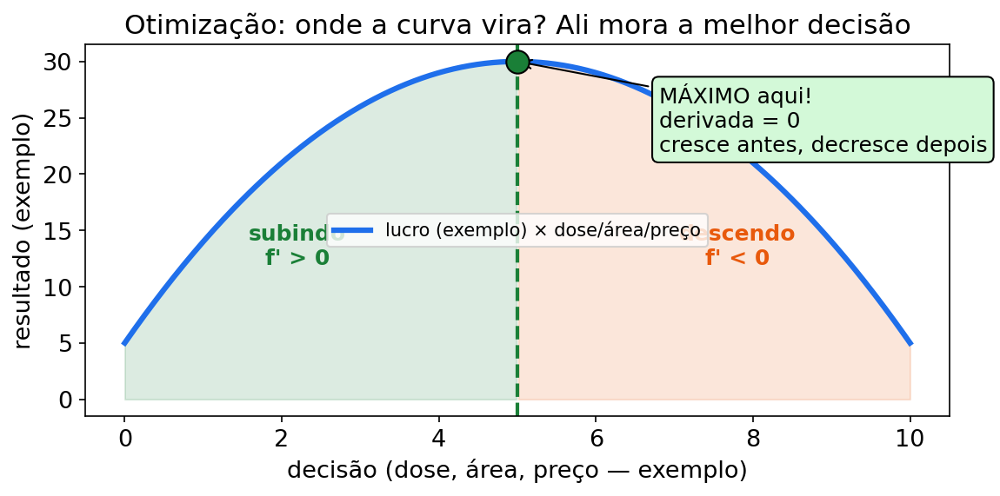
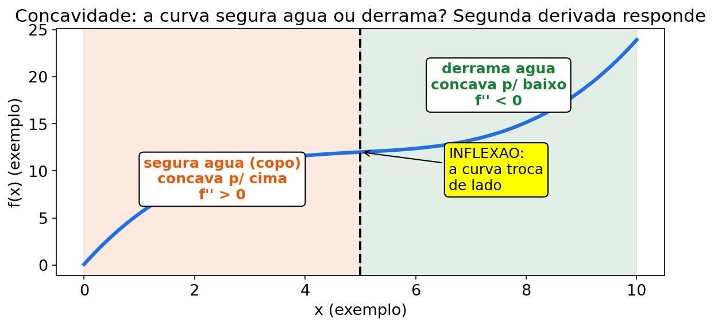
Figura fig11 — Concavidade. Descrição: dois painéis: curva com concavidade para cima (segura água, sorriso, f″ > 0, cocho cheio) e para baixo (derrama água, morro, f″ < 0), com tangentes mostrando inclinação crescendo ou decrescendo no ganho do lote. Leitura: concavidade para cima confirma mínimo (conversão mínima); para baixo confirma máximo (piquete máximo, lotação ótima). Use f″ como prova rápida do ótimo antes de calcular f(x).*
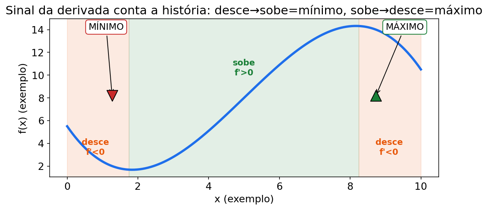
Figura fig16 — Sinal da derivada. Descrição: reta dos sinais do cocho: linha com três zonas (+ antes de 1, 0 no ponto 1, − depois), um carimbo "cresce/desce" em cada zona e dois picos marcados no gráfico abaixo (topo de morro para +→− e fundo de vale para −→+). Leitura: f′ > 0 = lote subindo; f′ < 0 = lote descendo; troca de sinal = candidato a máximo ou mínimo. Sempre teste um número em cada zona antes de decidir.
(2) Por que importa no seu curso
| Aplicação | Zootecnia |
|---|---|
| Monotonia do ganho | Quando o lote acelera e quando entra em estagnação |
| Máximo de área com cerca fixa | Divisão de piquete / dimensão ótima com material limitado |
| Máximo de lucro/lotação do lote | Ponto em que adicionar cabeça deixa de compensar (conceitual) |
| Mínimo de conversão alimentar | Ração mais eficiente (menor CA) |
| Taxa marginal de consumo | Quanto a próxima cabeça/unidade puxa de consumo |
CONEXÃO — CONEXÃO COM SEU CURSO Piquete com cerca fixa é geometria + Cálculo. Lotação ótima conceitual é parábola com vértice. Conversão mínima é quociente com derivada zero. Três problemas diferentes, uma receita só: derivar, zerar, conferir, calcular o valor.
CURIOSIDADE — CURIOSIDADE Com perímetro fixo, o retângulo de área máxima é sempre o quadrado. A Ana testou com 200 m (50×50) e com 80 m (20×20). O quadrado venceu as duas vezes. Na prova, desconfie se o ótimo der muito "torto" — confira a conta.
(3) Receita passo a passo
Receita A — crescer/diminuir:
- Derive.
- Fatore até ver os zeros.
- Monte a linha de sinais.
- Escreva os intervalos em frase.
Receita B — maximizar/minimizar:
- Escreva a função objetivo (área, lucro do lote, conversão…).
- Derive e zere → candidato x*.
- Confirme o sinal (máx/min) — teste da 1ª derivada ou 2ª derivada.
- Calcule o valor ótimo f(x*) — não basta achar o x.
Receita C — otimização com restrição "geográfica" (piquete):
- Traduza a restrição (ex.: perímetro fixo → soma dos lados fixa).
- Escreva a área só com uma variável.
- Otimize (Receita B).
Receita D — taxa marginal: derive a função total e (se precisar) substitua.
ERRO CLÁSSICO — ERRO CLÁSSICO Achar o x ótimo e parar. A questão pede "qual a área máxima?", não "qual o x?". Sempre calcule f(x*). No piquete: x = 50 não é a resposta; A = 2500 m² (números de exemplo) é.
(4) Exemplos resolvidos
Exemplo 1 — Ganho sobe, estagna e volta (monotonia) (número de exemplo)
P(t) = t³ − 6t² + 9t (ganho acumulado, kg).
Passo 1: P′(t) = 3t² − 12t + 9 = 3(t² − 4t + 3) = 3(t − 1)(t − 3). Passo 2 — zeros: t = 1 e t = 3. Passo 3 — sinais:
- t < 1 → + (cresce)
- 1 < t < 3 → − (cai a taxa… e aqui P′ negativo significa P descendo no modelo)
- t > 3 → + (cresce de novo)
Resposta: o modelo cresce para t<1 e
t>3, e diminui entre 1 e 3
(números de exemplo). Como P(t) representa um acumulado,
essa parte decrescente é um alerta de modelagem: um peso acumulado não
deveria voltar atrás dentro da história fictícia.
Exemplo 2 — Otimização: área máxima com 200 m de cerca (número de exemplo)
Retângulo com perímetro 200 m: 2(x + y) = 200 → x + y = 100 → y = 100 − x. Área: A(x) = x(100 − x) = 100x − x².
Passo 1: A′(x) = 100 − 2x. Passo 2: 100 − 2x = 0 → x = 50. Passo 3 — sinal: A′ > 0 para x < 50; A′ < 0 para x > 50 → máximo . Passo 4 — valor: y = 50; A(50) = 50·50 = 2500.
Resposta: quadrado de 50 × 50 m com área máxima 2500 m² (número de exemplo). Geografia básica para divisão de piquete com recurso fixo.
Exemplo 3 — Lotação ótima do lote (conceitual) (número de exemplo)
"Retorno do lote" (unidades de exemplo de lucro): L(x) = −5x² + 120x − 500, x = cabeças.
Passo 1: L′(x) = −10x + 120. Passo 2: −10x + 120 = 0 → x = 12. Passo 3 — sinal: + antes de 12, − depois → máximo (ou L″ = −10 < 0). Passo 4 — valor: L(12) = −5·144 + 120·12 − 500 = −720 + 1440 − 500 = 220.
Resposta: x = 12 cabeças, retorno 220 (números de exemplo). Conceito: lotação conceitual — o parâmetro real de manejo vem da disciplina de manejo, não do Cálculo; aqui você aprende a estrutura do "melhor ponto".
Exemplo 4 — Taxa marginal de consumo (número de exemplo)
Consumo total de MS: C(x) = 0,05x³ + 2x² + 10x (kg), x = cabeças no lote.
Passo 1: C′(x) = 0,15x² + 4x + 10. Passo 2: C′(20) = 0,15·400 + 80 + 10 = 60 + 80 + 10 = 150.
Resposta: a cabeça de número 21 (marginal em x = 20) adiciona cerca de 150 kg ao consumo total do modelo (número de exemplo) — decisão: cabe mais uma? depende do ganho extra.
Exemplo 5 — A taxa de ganho sempre positiva, mas caindo (quociente) (número de exemplo)
P(t) = 100t / (t + 10) (kg).
Passo 1 — quociente: u = 100t → 100; v = t + 10 → 1. P′(t) = [100(t + 10) − 100t·1] / (t + 10)² = 1000 / (t + 10)².
Passo 2 — sinais: denominador sempre positivo → P′(t) > 0: peso sempre sobe.
Passo 3 — a taxa: P′(0) = 1000/100 = 10; P′(10) = 1000/400 = 2,5; P′(90) = 1000/10000 = 0,1.
Resposta: o lote continua ganhando, mas a taxa desacelera forte (números de exemplo) — a derivada mostra o "esgotamento" do ganho que a média esconderia.
Exemplo 6 — NOVO: mínimo da conversão alimentar (quociente + 2ª derivada) (número de exemplo)
A Ana quer o ponto mais eficiente da conversão CA(x) = (x² + 64)/x, x > 0 (número de exemplo, já derivado na U2).
Passo 1 — derivada: CA′(x) = (x² − 64)/x². Passo 2 — zerar: x² − 64 = 0 → x = 8 (x > 0). Passo 3 — conferir (sinal): x = 4 → (16−64)/16 < 0; x = 10 → (100−64)/100 > 0. −→+ → mínimo . Passo 4 — valor: CA(8) = (64 + 64)/8 = 128/8 = 16.
Resposta: mínimo em x = 8, com CA = 16 (números de exemplo). Tradução: até 8 a eficiência melhora; depois piora. Se a questão pedisse só "x = 8", faltaria metade — o valor ótimo é 16.
PAUSA PARA VOCÊ — PAUSA PARA VOCÊ Refaça o Exemplo 2 com 120 m de cerca (número de exemplo). Dica: x + y = 60, A = 60x − x², x* = 30, A = 900 m². Se deu isso, você domina a Receita C.
GUIA PASSO A PASSO — aplicação: lotação ótima do piquete
Problema novo do Curral do Capim-Manso (números de exemplo): no piquete Lucro-Rio, o lucro mensal do lote é L(x) = 400x − 2x² (unidade monetária de exemplo), com x cabeças, 0 ≤ x ≤ 250. Quantas cabeças maximizam o lucro e qual é ele?
Faça junto com a Ana, um passo por linha:
- Ler e marcar: entrada x (cabeças), saída L (lucro de exemplo). Ferramenta: otimização (Receita B).
- Escrever a função objetivo antes de calcular: L(x) = 400x − 2x², 0 ≤ x ≤ 250.
- Derivar: L′(x) = 400 − 4x.
- Zerar: 400 − 4x = 0 → x* = _____ (cabeças).
- Provar o sinal antes: x = 50 → L′ = 400 − 200 = +200 (lucro subindo).
- Provar o sinal depois: x = 150 → L′ = 400 − 600 = −200 (lucro caindo).
- Veredito: + → − = máximo . Atalho: L″(x) = −4 < 0 → curva "morro" → máximo confirmado.
- Calcular o VALOR: L(100) = 400·100 − 2·100² = 40000 − 20000 = L(x*) = _____.
- Checagem dos vizinhos: L(90) = 36000 − 16200 = 19800; L(110) = 44000 − 24200 = 19800. Os dois ficam abaixo de 20000 (simetria da parábola) — o máximo está no meio, em 100.
- Taxa marginal como bônus: L′(50) = 200 — a cabeça nº 51 "traria" 200 de lucro marginal (número de exemplo); L′(100) = 0 — a partir daí o bônus acabou.
- Fora do domínio (cuidado da Ana): L(250) = 100000 − 125000 = −25000 — lotação exagerada vira prejuízo no modelo (número de exemplo).
- Responder com frase: "a lotação ótima é 100 cabeças, com lucro de 20000 (números de exemplo); colocar mais diminui o lucro".
Lacunas para preencher no caderno:
- Passo 4: x* = _____
- Passo 7: tipo de ponto = _____ (sinal +→− e L″ < 0)
- Passo 8: L(x*) = _____
- Passo 10: taxa marginal em x = 100 é _____ (o que significa "sem bônus" para a cabeça seguinte)
Checklist (marque quando fizer):
- Escrevi L(x) com o domínio antes de derivar (passo 2).
- Zerei a derivada e confirmei o sinal dos dois lados (passos 4–6).
- Usei a 2ª derivada como prova rápida (passo 7).
- Calculei L(x*) e conferi com os vizinhos (passos 8–9).
Gabarito do guia (abrir depois de tentar)
- Passo 4: 4x = 400 → x* = 100 cabeças (número de exemplo).
- Passo 7: máximo (+ para −, L″ = −4 < 0, curva "morro").
- Passo 8: L(100) = 40000 − 20000 = 20000 (número de exemplo).
- Passo 10: L′(100) = 0 — a próxima cabeça já não soma nada ao lucro no modelo.
- Frase-pronta: "o lucro máximo é 20000 em 100 cabeças; além disso o modelo piora e em 250 dá prejuízo (números de exemplo)".
(5) Você faz — 8 exercícios (6 originais + 2 novos)
Ex1. h(t) = t² − 10t + 30. Ache o ponto crítico e diga se é máximo ou mínimo (com o valor). (Interprete como "custo/consumo".)
Ex2. Piquete com 80 m de cerca, retângulo: 2(x + y) = 80. Maximise A = x·y.
Ex3. Retorno do lote: L(x) = −4x² + 64x − 200. Ache a lotação conceitual ótima e o retorno.
Ex4. Consumo total: C(x) = 0,02x³ + 3x² + 20x. Taxa marginal em x = 30.
Ex5. Peso: P(t) = 2t³ − 12t² + 18t + 5. Em quais intervalos cresce e em quais diminui?
Ex6. Ponto de equilíbrio do lote: R(x) = 150x (receita de venda); C(x) = 30x + 1800 (custo). Ache x em que R = C.
Ex7 — NOVO. Piquete com 120 m de cerca (número de exemplo): 2(x + y) = 120. Escreva A(x), derive, ache x*, y* e a área máxima. Confirme que é máximo pelo sinal.
Ex8 — NOVO. Conversão mínima (número de exemplo): CA(t) = (t² + 16)/t, t > 0. Derive (quociente), ache o ponto crítico, classifique e calcule o valor mínimo. Interprete em uma frase.
(6) Gabarito comentado
Ex1 → mínimo em t = 5; h(5) = 5.
- h′ = 2t − 10 = 0 → t = 5.
- Sinal: − para t < 5; + para t > 5 → mínimo .
- h(5) = 25 − 50 + 30 = 5 (número de exemplo).
Ex2 → x = 20, y = 20; A máxima = 400 m².
- 2(x + y) = 80 → x + y = 40 → y = 40 − x.
- A(x) = x(40 − x) = 40x − x².
- A′ = 40 − 2x = 0 → x = 20 → y = 20.
- A(20) = 400 m² (número de exemplo). Novamente o quadrado vence.
A Vaquera Ana comenta cada passo:
- Micro-passo 1: traduzo a cerca: 2(x+y) = 80 vira x+y = 40, logo y = 40-x (números de exemplo).
- Micro-passo 2: escrevo a meta com 1 variável: A(x) = x(40-x) = 40x-x².
- Micro-passo 3: derivo: A'(x) = 40-2x, uma linha por passo.
- Micro-passo 4: zero e acho o candidato: 40-2x = 0 dá x = 20, y = 20.
- Micro-passo 5: confiro o sinal: + antes de 20 e - depois, então é máximo.
- Micro-passo 6: calculo o valor: A(20) = 400 m² (número de exemplo).
- Micro-passo 7: respondo em frase: "o piquete ótimo é 20 x 20 m com 400 m² (número de exemplo); x sozinho não é resposta".
Ex3 → x = 8; L(8) = 56.
- L′ = −8x + 64 = 0 → x = 8.
- L″ = −8 < 0 → máximo .
- L(8) = −4·64 + 64·8 − 200 = −256 + 512 − 200 = 56 (número de exemplo).
Ex4 → C′(30) = 254.
- C′ = 0,06x² + 6x + 20.
- C′(30) = 0,06·900 + 180 + 20 = 54 + 180 + 20 = 254 (número de exemplo).
Ex5 → cresce para t < 1 e t > 3; diminui para 1 < t < 3.
- P′ = 6t² − 24t + 18 = 6(t² − 4t + 3) = 6(t − 1)(t − 3).
- Zeros: 1 e 3. Sinais: + , − , +. Tradução: a taxa acelera no começo, fica menor no meio do modelo e volta a subir. Isso sugere revisar as hipóteses do modelo; o teste da derivada ajuda a encontrar onde a curva muda de direção.
Ex6 → x = 15. 150x = 30x + 1800 → 120x = 1800 → x = 15 (número de exemplo). Conferência: R = 2250; C = 450 + 1800 = 2250 .
Ex7 — NOVO → x = 30, y = 30; A máxima = 900 m².
- x + y = 60 → y = 60 − x; A(x) = 60x − x².
- A′ = 60 − 2x = 0 → x = 30 → y = 30.
- Sinal: + antes, − depois → máximo . A(30) = 900 m² (número de exemplo).
Ex8 — NOVO → mínimo em t = 4; CA(4) = 8.
- CA′ = (t² − 16)/t² (ver U2 Ex5). Zera em t = 4.
- Sinal: − antes, + depois → mínimo (ou 2ª derivada positiva).
- CA(4) = (16+16)/4 = 8 (número de exemplo). Frase: "a conversão melhora até t = 4 e depois piora; o ponto mais eficiente é 8 (número de exemplo)."
Mini-quiz V/F — Unidade 3
- ( ) Se f′ > 0 num intervalo, f cresce nele.
- ( ) Todo ponto com f′ = 0 é máximo.
- ( ) No piquete retangular com perímetro fixo, a área máxima é o quadrado.
- ( ) Taxa marginal é a derivada da função total.
- ( ) Em otimização, basta achar x*; não precisa calcular f(x*).
Gabarito: 1-V. 2-F (precisa conferir o sinal; pode ser mínimo ou nada). 3-V. 4-V. 5-F (valor ótimo é obrigatório).
CURIOSIDADE — CURIOSIDADE O teste da 2ª derivada é o atalho: se f′(x*) = 0 e f″(x*) < 0 → máximo; se f″(x*) > 0 → mínimo. A Ana usa quando a 2ª derivada é fácil (parábolas). Quando é quociente feio, volta para o teste do sinal — sem vergonha.
(6b) Trilha N0 → N3 da Unidade 3 — 7 exercícios novos
Fala da Ana: "Achar o x ótimo é metade. A outra metade é calcular quanto dá e dizer se é máximo ou mínimo."
T1 (N0). O que falta se você achou x = 12 e parou? Complete: "falta calcular _____ e confirmar _____".
T2 (N0). Na fig11, qual concavidade confirma máximo? E qual confirma mínimo? Relacione com sinal de f″.
T3 (N1). L(x) = −3x² + 60x + 20 (retorno do lote, exemplo). Ache x* e L(x*) e confirme com f″.
T4 (N1). R(x) = 150x; C(x) = 60x + 2700 (R$, exemplo). Ache o ponto de equilíbrio R = C e confira.
T5 (N2 — usa a tabela). Na TABELA DE DADOS FICTÍCIOS DO REBANHO EXEMPLO, calcule ganho total dos dias 1–3 = 0,8+0,9+1,0 = 2,7 kg (exemplo). Se cada kg vale 8 unidades de exemplo, qual o "retorno" de 3 dias? 1 frase.
T6 (N2 — usa a tabela). Com leite dos dias 7 (13,5), 8 (14,0) e 9 (13,8) L/dia (exemplo), ordene do pior ao melhor. O que a Ana aprende sobre "pico isolado"? 1 frase.
T7 (N3 — desafio). Piquete com 160 m de cerca: 2(x+y) = 160 (m, exemplo). Escreva A(x), ache x*, y*, A máxima e diga por que deu quadrado.
Trilha U3 — gabarito comentado (T1–T7):
- T1 → falta calcular f(x) e confirmar máximo/mínimo.* Ótimo = onde + quanto.
- T2 → para baixo (f″ < 0) = máximo; para cima (f″ > 0) = mínimo.
- T3 → x = 10; L(10) = 320.* L′ = −6x + 60 = 0 → x = 10. L″ = −6 < 0 → máximo. L(10) = −300 + 600 + 20 = 320 (exemplo).
- T4 → x = 30. 150x = 60x + 2700 → 90x = 2700 → x = 30 (exemplo). Confere: 4500 = 4500.
- T5 → retorno 21,6. 2,7×8 = 21,6 unidades de exemplo. Frase: "em 3 dias o lote acumulou 2,7 kg (exemplo)".
- T6 → ordem: dia 7 (13,5) < dia 9 (13,8) < dia 8 (14,0). Frase: "pico de um dia (exemplo) não garante sequência; média dos 3 confirma o nível".
- T7 → A(x) = 80x − x²; x = 40, y = 40, A = 1600 m².** A′ = 80 − 2x = 0 → 40. Quadrado vence por simetria (exemplo).
UNIDADE 4 — INTEGRAIS
Abertura no curral fictício
A Ana tem a taxa diária de consumo do lote: 8 + 0,5t kg/dia (número de exemplo). "Se cada dia come um tanto diferente, quanto comeu em 14 dias?" Somar dia por dia dá, mas a integral soma de uma vez — como fatiar o período em fatias fininhas e empilhar.
Ela também quer o caminho inverso: "Se a taxa de ganho é 4t³, qual é o peso acumulado?" Isso é antiderivada — desfazer a derivada. E o + C? "É o peso inicial, que só a balança sabe."
MAPA MENTAL — MAPA MENTAL DA UNIDADE 4 Integral = SOMAR FATIAS. Indefinida (antiderivada + C: qual função derivada dá isso?) → definida (TFC: F(b) − F(a) = número acumulado) → substituição (acha o u e o du). Campo: consumo total, ganho total, área com sinal.
DIÁRIO DA VAQUERA ANA — aprendendo junto com você No Curral do Capim-Manso somei o consumo da semana e esqueci o + C na indefinida (números de exemplo). Errei: ainda inverti F(a)-F(b) na definida e deu negativo. Corrigi: indefinida leva + C; definida é F(b)-F(a), cima menos baixo, com unidade (kg). Conselho: confira derivando de volta e pergunte "onde está o C e qual é a unidade?".
(1) Do que se trata
Integral = somar contribuições minúsculas (fatias) ao longo de um intervalo.
Duas caras da mesma moeda:
- Integral indefinida ∫ f(x) dx = F(x) + C → "qual função, cuja derivada é f?" (antiderivada — desfazer a derivada).
- Integral definida ∫ de a até b de f(x) dx = F(b) − F(a) → número (área com sinal embaixo da curva).
Teorema Fundamental do Cálculo (TFC) — a ponte:
derivar e integrar se desfazem. Se F′ = f, então ∫ de a até b de f = F(b) − F(a).
Por que + C? Derivada de constante é 0. Existem infinitas antiderivadas que diferem só por uma constante (o "peso inicial" que só a pesagem real revela).
NADA É ÓBVIO — NADA É ÓBVIO — dx é o "tamanho da fatia" Em ∫ f(t) dt, o dt diz qual variável está sendo fatiada. Fatia tempo (dt), empilha consumo. Sem dt, a integral fica sem "unidade de fatiamento" — sempre escreva.
PAUSA PARA VOCÊ — PAUSA PARA VOCÊ Qual função derivada dá 6t²? (2t³ — confira derivando.) Então ∫ 6t² dt = 2t³ + C. Você acabou de integrar sem saber que sabia.
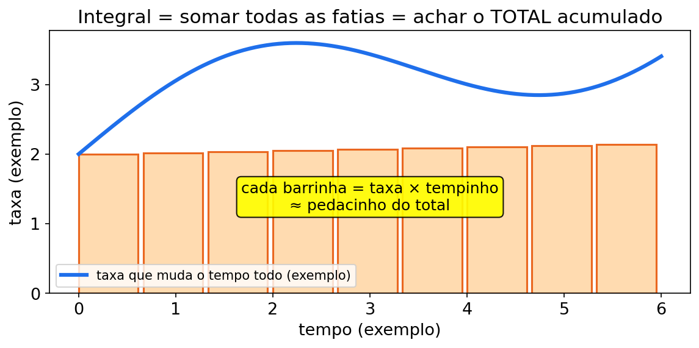
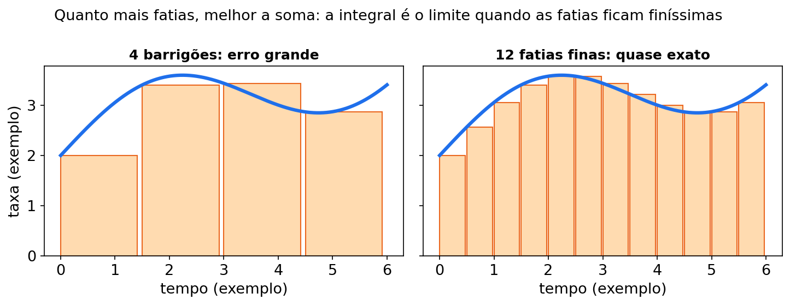
Figura fig12 — Riemann 4 vs 12. Descrição: mesma curva de taxa de consumo aproximada por 4 retângulos largos (erro visível no cocho) e por 12 retângulos finos (quase colados na curva). Leitura: mais fatias = soma mais exata. A integral definida é o limite quando as fatias ficam finíssimas; confira sempre com unidade (kg, L).
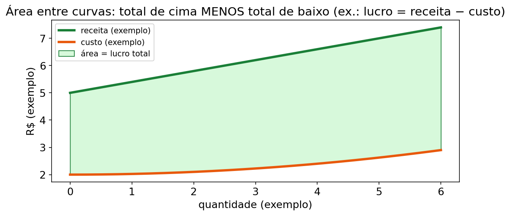
Figura fig13 — Área entre curvas. Descrição: duas curvas no mesmo plano, receita do lote em cima e custo embaixo, com a faixa entre elas sombreada entre a e b representando lucro acumulado. Leitura: área entre curvas = integral da diferença (de cima menos de baixo). Se as curvas trocam de lugar, quebre o intervalo e some os módulos.
(2) Por que importa no seu curso
| Peça | Zootecnia |
|---|---|
| Antiderivada da taxa de ganho | Peso acumulado (+ C = peso inicial) |
| Antiderivada da taxa de consumo | Consumo total no período |
| ∫ taxa diária de consumo | Bolo total de matéria seca consumida |
| ∫ taxa de ganho diário | Ganho total do período (soma de "fatias de um dia") |
| Integral entre curvas (receita − custo) | Resultado acumulado com sinal; positivo é lucro, negativo é prejuízo no modelo |
CONEXÃO — CONEXÃO COM SEU CURSO Taxa (derivada) → total (integral). Ganho diário → ganho do período. Consumo diário → sacas do mês. Produção diária de leite → total da lactação parcial. A seta "derivar" vai; a seta "integrar" volta — e o + C é o ponto de partida que só o campo dá.
(3) Receita passo a passo
Receita A — integral indefinida de potência:
- Escreva cada termo com expoente explícito.
- Soma 1 no expoente.
- Divide pelo novo expoente.
- Caso especial: se
n = −1, use∫ x^(−1) dx = ln|x| + C; não divida por zero. - Simplifique e some + C (indefinida) — ou aplique limites (definida).
Receita B — integral definida:
- Ache a antiderivada F(x) sem + C.
- Calcule F(b) − F(a) (cima menos baixo).
- Interprete com unidade (kg, cabeças·período, etc.).
Receita C — substituição simples (caso básico):
- Veja se existe u e também u′ (ou múltiplo) junto.
- u = recheio; du = (derivada do recheio) dx.
- Troque tudo em u; integre; volte para x.
ERRO CLÁSSICO — ERRO CLÁSSICO Esquecer o + C na indefinida, ou colocar + C na definida. Regra: indefinida leva C; definida vira número (F(b)−F(a), sem C). Outro clássico: F(a)−F(b) invertido. É sempre cima menos baixo.
CURIOSIDADE — CURIOSIDADE Integrar potência é derivar ao contrário: derivar desce e diminui; integrar sobe e divide. Se você sabe um, sabe o outro de trás para frente.
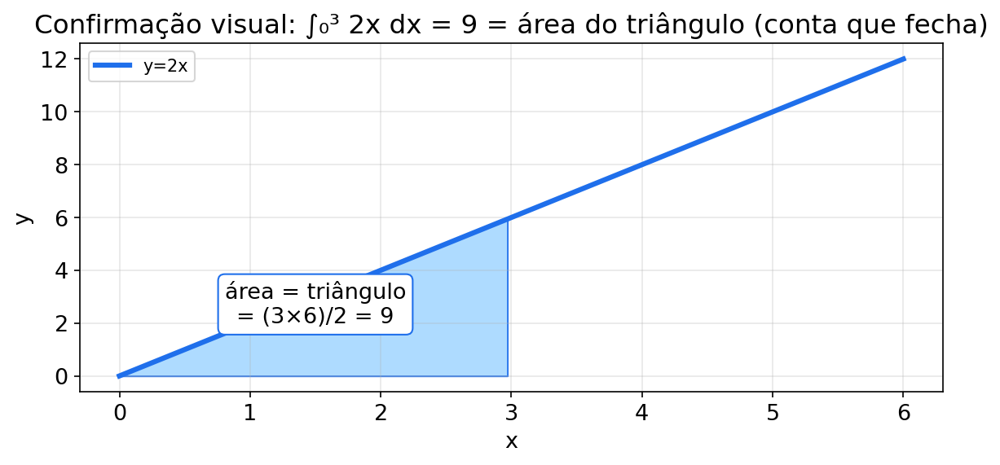
Figura fig19 — Triângulo da integral. Descrição: gráfico com a reta constante c(t) = 4t saindo da origem, o triângulo sombreado entre t = 0 e t = 5 com base 5 e altura 20, e a conta escrita na cerca: área = base·altura/2 = 50 = ∫₀⁵ 4t dt. Leitura: quando a taxa é reta passando pela origem, a integral definida é um triângulo — base × altura ÷ 2. Confira sempre a antiderivada pela área: se bater, a conta está certa.
(4) Exemplos resolvidos
Exemplo 1 — Da taxa de ganho de volta ao peso (potência) (número de exemplo)
A taxa de ganho é 4t³ (kg por período). Qual o ganho acumulado?
∫ 4t³ dt
Passo 1 — regra: expoente 3 → 4; 4/4 = 1 → t⁴. Passo 2: = t⁴ + C.
Resposta: ganho acumulado = t⁴ + C. O + C é o peso inicial. Conferência: (t⁴)′ = 4t³ .
Exemplo 2 — Polinômio termo a termo (número de exemplo)
∫ (6t² + 4t) dt
Passo 1 — 6t²: 3 → 2 → 2t³. Passo 2 — 4t: 2 → 2 → 2t². Passo 3: = 2t³ + 2t² + C.
Conferência: (2t³ + 2t²)′ = 6t² + 4t .
Exemplo 3 — Consumo total em 14 dias (definida) (número de exemplo)
Taxa de consumo diário: c(t) = 8 + 0,5t (kg MS/dia), t em dias.
Quanto comeu no total de t = 0 a t = 14?
∫ de 0 até 14 de (8 + 0,5t) dt
Passo 1 — antiderivada: 8t + 0,25t². Passo 2 — F(14) − F(0): (8·14 + 0,25·196) − 0 = 112 + 49 = 161.
Resposta: 161 kg (número de exemplo) consumidos no período. Ideia: cada dia é uma fatia de altura c(t).
Exemplo 4 — TFC + conferência geométrica (número de exemplo)
∫ de 0 até 4 de (2t + 2) dt
Passo 1 — antiderivada: t² + 2t. Passo 2 — limites: (16 + 8) − 0 = 24. Passo 3 — trapézio: f(0) = 2; f(4) = 10; área = (2 + 10)/2 · 4 = 24 .
Resposta: 24 (número de exemplo). TFC bateu com a geometria.
Exemplo 5 — Substituição simples (número de exemplo)
∫ 2t(t² + 1)³ dt
Passo 1 — u: u = t² + 1 → du = 2t dt (está exatamente na frente!). Passo 2 — trocar: ∫ u³ du. Passo 3 — integrar: u⁴/4 + C. Passo 4 — voltar: (t² + 1)⁴/4 + C.
Conferência: [(t²+1)⁴/4]′ = (4/4)(t²+1)³ · 2t = 2t(t²+1)³ .
Exemplo 6 — NOVO: leite total da quinzena (definida) (número de exemplo)
Taxa diária de leite (modelo didático, números de exemplo): l(d) = 10 + 0,4d (litros/dia), d em dias, de 0 a 15.
∫ de 0 até 15 de (10 + 0,4d) dd
Passo 1 — antiderivada: 10d + 0,2d². Passo 2 — limites: F(15) = 150 + 0,2·225 = 150 + 45 = 195; F(0) = 0. Passo 3 — resposta: 195 litros (número de exemplo) na quinzena.
Conferência geométrica (trapézio): l(0) = 10; l(15) = 16; área = (10+16)/2 · 15 = 26/2 · 15 = 13·15 = 195 . A Ana sorri: "TFC e trapézio concordaram — pode anotar."
PAUSA PARA VOCÊ — PAUSA PARA VOCÊ ∫ de 0 até 5 de 4t dt. Antiderivada? (2t².) F(5)−F(0)? (50.) Figura? (Triângulo base 5, altura 20.) Se fez em 3 passos, a Receita B é sua.
GUIA PASSO A PASSO — integral: leite acumulado da lactação
Problema novo do Curral do Capim-Manso (números de exemplo): a vaca Estrela tem taxa diária de leite r(d) = 6 + 0,3d (litros/dia), d em dias, nos primeiros 10 dias. Quanto leite acumulou? E se a pesagem inicial do tanque marcasse 5 L?
Faça junto com a Ana, um passo por linha:
- Ler e marcar: entrada d (dias), saída r (L/dia). A saída é TAXA → acumular pede integral (Receita B).
- Escrever a expressão antes de calcular: ∫ de 0 até 10 de (6 + 0,3d) dd.
- Antiderivada termo a termo: ∫ 6 dd = 6d; ∫ 0,3d dd = 0,3·d²/2 = 0,15d² → F(d) = 6d + 0,15d² (+ C só na indefinida).
- Aplicar limite de cima: F(10) = 6·10 + 0,15·100 = 60 + 15 = 75.
- Aplicar limite de baixo: F(0) = 0 + 0 = 0.
- Cima menos baixo: 75 − 0 = 75 litros (número de exemplo).
- Conferência com o trapézio (Receita B na mão): r(0) = 6 e r(10) = 9 → área = (6+9)/2 · 10 = 7,5·10 = 75 — bateu com a integral.
- Conferência com a fig19 (triângulo): se a taxa fosse pura reta pela origem (como ∫₀⁵ 4t dt), a área seria base·altura/2 — aqui é trapézio, mas a ideia de "área = total" é a mesma.
- Somar o estoque inicial: se o tanque já tinha L(0) = 5 L, o total é 5 + 75 = 80 litros (número de exemplo) — o + C na indefinida representa exatamente esse "peso/estoque inicial".
- Taxa no fim do período (leitura zootécnica): r(10) = 6 + 3 = 9 L/dia — a curva subiu 3 L/dia em 10 dias no modelo.
- Erro clássico revisado: trocar para F(0) − F(10) = −75 (negativo não existe como leite acumulado) — é sempre cima menos baixo.
- Responder com frase: "a Estrela acumulou 75 L em 10 dias; com estoque inicial de 5 L, 80 L no tanque (números de exemplo)".
Lacunas para preencher no caderno:
- Passo 3: F(d) = 6d + _____
- Passo 6: F(10) − F(0) = _____
- Passo 9: total com estoque inicial de 5 L = _____
- Passo 10: r(10) = _____
Checklist (marque quando fizer):
- Escrevi a integral com limites antes de integrar (passo 2).
- Fiz a antiderivada termo a termo, sem esquecer o ÷2 da potência (passo 3).
- Apliquei cima menos baixo, nessa ordem (passos 4–6).
- Conferi por trapézio/triângulo antes de assinar a resposta (passos 7–8).
Gabarito do guia (abrir depois de tentar)
- Passo 3: F(d) = 6d + 0,15d² (número de exemplo).
- Passo 6: F(10) − F(0) = 75 − 0 = 75 litros.
- Passo 9: 5 + 75 = 80 litros (número de exemplo).
- Passo 10: r(10) = 6 + 0,3·10 = 9 litros/dia.
- Frase-pronta: "75 L acumulados na janela de 10 dias e 80 L no tanque com o estoque inicial (números de exemplo)".
(5) Você faz — 8 exercícios (6 originais + 2 novos)
Ex1. ∫ 3t² dt
Ex2. ∫ (10t⁴ − 2t) dt
Ex3. ∫ (0,1t² + 2) dt
Ex4. ∫ de 0 até 12 de 6 dt (taxa diária constante de 6 kg)
Ex5. ∫ de 0 até 5 de 4t dt
Ex6. Substituição: ∫ 6t(t² + 1)² dt
Ex7 — NOVO. Arraçoamento semanal (número de exemplo): taxa c(t) = 5 + t (kg/dia). Calcule ∫ de 0 até 7 de (5 + t) dt. Interprete como consumo total da semana.
Ex8 — NOVO. Substituição com constante (número de exemplo): ∫ 4t(t² + 4)² dt. Use u = t² + 4, ache du, ajuste a constante e volte para t. Confira derivando.
(6) Gabarito comentado
Ex1 → t³ + C. 3t² → 3/3 = 1 → t³. Conferência: (t³)′ = 3t² .
Ex2 → 2t⁵ − t² + C.
- 10t⁴ → 10/5 = 2 → 2t⁵
- −2t → −2/2 = −1 → −t² Conferência: (2t⁵ − t²)′ = 10t⁴ − 2t .
Ex3 → t³/30 + 2t + C.
- 0,1t² → 0,1/3 = 0,1t³/3 = t³/30 (0,1 = 1/10; (1/10)/3 = 1/30)
- 2 → 2t Conferência: (t³/30 + 2t)′ = 3t²/30 + 2 = 0,1t² + 2 .
Ex4 → 72. Antiderivada de 6 é 6t. 6·12 − 0 = 72 (número de exemplo). Conferência: retângulo de altura 6 e largura 12 = 72 .
Ex5 → 50. Antiderivada de 4t: 2t². F(5) − F(0) = 2·25 = 50. Conferência: triângulo de base 5 e altura f(5) = 20 → (5·20)/2 = 50 .
Ex6 → (t² + 1)³ + C.
- u = t² + 1 → du = 2t dt; note que 6t dt = 3·du.
- ∫ 3u² du = u³ + C → (t² + 1)³ + C. Conferência: derivar devolve 3(t²+1)² · 2t = 6t(t²+1)² . Cuidado (erro comum): integrar 6t·u² como se fosse u³·6t sem achar o 3.
A Vaquera Ana comenta cada passo:
- Micro-passo 1: desconfio de substituição porque vejo (t²+1)² junto do seu primo 6t (número de exemplo).
- Micro-passo 2: escolho u = t²+1 e derivo o recheio: du = 2t dt.
- Micro-passo 3: ajusto a constante: 6t dt = 3 vezes du, não 1 vez.
- Micro-passo 4: troco tudo: integral vira ∫3u² du, bem mais simples.
- Micro-passo 5: integro em u: u³ + C, com + C porque é indefinida.
- Micro-passo 6: volto para t: (t²+1)³ + C.
- Micro-passo 7: confiro derivando de volta e respondo: "(t²+1)³ + C (número de exemplo)".
Ex7 — NOVO → 59,5. Antiderivada: 5t + t²/2. F(7) = 35 + 49/2 = 35 + 24,5 = 59,5 (número de exemplo, kg na semana). F(0) = 0. Trapézio: (5 + 12)/2 · 7 = 17/2 · 7 = 59,5 .
Ex8 — NOVO → (2/3)(t² + 4)³ + C. u = t² + 4 → du = 2t dt; 4t dt = 2·du. ∫ 2u² du = 2u³/3 + C = (2/3)(t²+4)³ + C. Conferência: derivada = (2/3)·3(t²+4)²·2t = 4t(t²+4)² .
Mini-quiz V/F — Unidade 4
- ( ) ∫ xⁿ dx = xⁿ⁺¹/(n+1) + C (para n ≠ −1).
- ( ) Integral definida leva + C no final.
- ( ) ∫[a→b] f = F(b) − F(a) se F′ = f.
- ( ) Na substituição, é preciso voltar para a variável original na indefinida.
- ( ) Área de retângulo/triângulo/trapézio pode conferir integral de reta.
Gabarito: 1-V. 2-F (definida vira número, sem C). 3-V (TFC). 4-V. 5-V.
CONEXÃO — CONEXÃO COM SEU CURSO (fecho da U4) Toda vez que a questão der taxa diária (kg/dia, L/dia) e pedir total no período, pense integral definida. Desenhe as fatias, ache F, faça cima menos baixo, responda com unidade e "número de exemplo" na consciência.
(6b) Trilha N0 → N3 da Unidade 4 — 7 exercícios novos
Fala da Ana: "Integral sem + C é ficha sem nome. E definida sem unidade é cocho sem etiqueta."
T1 (N0). Indefinida termina com o quê? Definida termina com o quê? Complete: "indefinida + _____; definida = _____ com unidade".
T2 (N0). Na fig12, qual aproximação é mais exata: 4 ou 12 fatias? Por quê em 1 frase? E na fig13, o que é a faixa sombreada?
T3 (N1). ∫ (8x³ + 6x) dx. Derive de volta para conferir (número de exemplo).
T4 (N1). ∫ de 0 até 5 de (6 + 2t) dt (kg/dia, exemplo). Interprete como consumo de 5 dias.
T5 (N2 — usa a tabela). Some os quatro registros de
leite dos dias 1–4: 12,0+12,5+13,0+13,2. Depois calcule
∫₀⁴(11+0,5t)dt. Os dois resultados são a mesma coisa?
Explique em uma frase, separando soma discreta de
integral de um modelo contínuo.
T6 (N2 — usa a tabela). Some o consumo MS dos dias
1–3: 6,2+6,4+6,5. Se a taxa fosse constante em
6,4 kg/dia por 3 dias, o total seria igual? Faça a conta do
retângulo.
T7 (N3 — desafio). Receita R(x) = 40x e custo C(x) = 20x + 100 no intervalo [0, 15] (exemplo). Calcule a área entre curvas ∫ de 0 até 15 de (R−C) dx e diga em frase se houve lucro acumulado.
Trilha U4 — gabarito comentado (T1–T7):
- T1 → indefinida + C; definida = F(b)−F(a) com unidade.
- T2 → 12 fatias (mais finas, erro menor). Faixa da fig13 = lucro/prejuízo acumulado do lote (receita menos custo).
- T3 → 2x⁴ + 3x² + C. 8/4 = 2; 6/2 = 3. Confere: (2x⁴+3x²)′ = 8x³+6x.
- T4 → 55. Antiderivada 6t + t². F(5) = 30 + 25 = 55 kg (exemplo).
- T5 → soma dos registros = 50,7 L; integral do modelo = 48
L. Os números não são a mesma grandeza:
50,7 Lé uma soma de quatro taxas registradas, enquanto48 Lé a área sob a função11+0,5tem[0,4]. Para aproximar uma integral com a tabela, é preciso informar como cada leitura representa o intervalo entre os dias. - T6 → não. A soma é
6,2+6,4+6,5=19,1 kg; com taxa constante,6,4×3=19,2 kg, apenas0,1 kgmaior. Retângulo = base × altura. - T7 → 750 unidades monetárias de exemplo.
∫(20x−100)dx=10x²−100xde0a15dá2250−1500=750. A área é positiva; nesse modelo, a receita fica acima do custo no intervalo.
UNIDADE 5 — ÁREA E EDO SEPARÁVEIS
Abertura no curral fictício
*A Ana olha o pasto: no modelo, a taxa de crescimento da biomassa é
proporcional à biomassa que já existe. No paiol, o modelo faz o
contrário: a qualidade do volumoso decai a uma taxa proporcional ao que
resta. "Crescer junto com o que tem e decair junto com o que resta têm a
mesma forma matemática?" Sim: dy/dx=ky, com sinais e
unidades bem definidos.
Ela também integra taxas: ganho e consumo acumulados, além do resultado entre receita e custo. A integral soma valores com o sinal do gráfico; a EDO modela crescimento ou decaimento proporcionais.
MAPA MENTAL — MAPA MENTAL DA UNIDADE 5 Integral definida (soma com sinal) → EDO
dy/dx=ky(taxa proporcional ao que existe) → soluçãoy=y₀e^{kx}(k>0cresce;k<0decai) → separar, integrar e exponenciar → meia-vidat½=ln2/|k|.
DIÁRIO DA VAQUERA ANA — aprendendo junto com você No Curral do Capim-Manso troquei o sinal do k e a qualidade que decaía virou "crescimento" (números de exemplo). Errei: usei Q(t) = 100e^(+0,10t) em vez de 100e^(-0,10t). Corrigi sublinhando o sinal antes: k < 0 decai, k > 0 cresce, e confirmei com t½ = 0,693/|k|. Conselho: sinal do k primeiro, conta depois; um sinal troca "dobra" por "cai à metade".
(1) Do que se trata
Parte A — Área com sinal: a integral definida soma
as áreas com o sinal que aparece no gráfico. Quando f(t)≥0
em todo o intervalo, a integral é a área acumulada. Quando a curva passa
abaixo do eixo, a parte negativa reduz o resultado; para medir apenas a
área geométrica, é preciso separar os trechos e usar valores
absolutos.
Parte B — EDO separáveis (EDO = equação diferencial ordinária — equação em que a derivada aparece na frase): A mais famosa do Cálculo I:
dy/dx = k·y
Tradução: a taxa de variação é proporcional ao que existe agora.
- k > 0 → crescimento (quanto mais tem, mais cresce — biomassa, lote…).
- k < 0 → decaimento (o que resta some sempre proporcional ao próprio valor — qualidade do volumoso, oferta residual…).
Método de separação de variáveis:
- Isole y de um lado e x do outro (multiplique/divida).
- Integre os dois lados.
- ln|y| = kx + C → y = y₀·e^(kx) com y₀ = valor inicial (y em x = 0).
Nível desta apostila: entender e aplicar y = y₀·e^(kx) com números de exemplo (meia-vida conceitual inclusive). Modelos zootécnicos completos de população/crescimento com outros parâmetros pertencem às disciplinas da área — aqui você aprende a estrutura matemática.
NADA É ÓBVIO — NADA É ÓBVIO — o que é EDO? Equação comum: acha número (2x = 6 → x = 3). EDO: acha função (dy/dx = 0,05y → y = y₀e^(0,05x)). A incógnita é a curva inteira, não um ponto. A condição inicial (y₀) escolhe qual curva, entre as infinitas paralelas exponenciais.
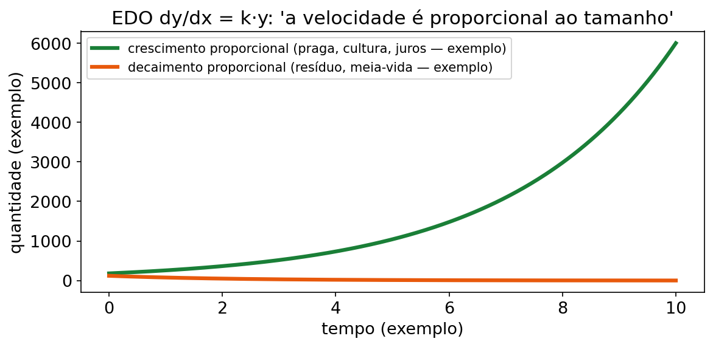
(2) Por que importa no seu curso
Zootecnia:
| Peça | Onde aparece |
|---|---|
| Área sob taxa de ganho | Ganho total acumulado no período (soma de fatias de um dia) |
| Área sob taxa de consumo | Consumo total de MS/ração no período |
| Área entre curvas (ex.: custo × receita do lote) | Prejuízo/lucro acumulado do lote |
| dy/dt = ky (crescer) | Biomassa/produção que cresce em proporção ao próprio tamanho (conceitual, kg/ha) |
| dy/dt = −ky (decair) | Qualidade do volumoso (silagem/pasto) e oferta que decaem proporcionalmente ao que resta (conceitual) |
CONEXÃO — CONEXÃO COM SEU CURSO Biomassa que dobra, qualidade que cai à metade, consumo acumulado da lactação — três histórias, duas ferramentas: integral definida (área) e exponencial (y₀e^(kt)). Nenhum parâmetro real aqui; só a estrutura que você vai reencontrar nas disciplinas aplicadas.
CURIOSIDADE — CURIOSIDADE e ≈ 2,71828 é a base "natural" do crescimento proporcional. e¹ ≈ 2,72 (cresce ~172% quando kt = 1); e^(−1) ≈ 0,37 (resta ~37% quando kt = −1). A Ana decora esses dois e estima qualquer EDO simples de cabeça.
(3) Receita passo a passo
Receita A — integral definida com sinal:
- Identifique a taxa f(t) e o intervalo [a, b].
- Integre (Unidade 4).
- Aplique limites.
- Responda com unidade (kg, %, etc.).
Receita B — dy/dx = ky (aplicar a fórmula):
- Identifique k e o valor inicial y₀ (em t = 0).
- Escreva y(t) = y₀·e^(k·t).
- Substitua o tempo pedido.
- Use calculadora para e^(…) (aproximações nos gabaritos).
Receita C — separar de verdade (quando pedirem o caminho):
- dy/dx = ky → dy/y = k dx.
- ∫ dy/y = ∫ k dx → ln|y| = kx + C.
- Exponenciar: y = e^C · e^(kx) → constante = y₀ → y = y₀ e^(kx).
Dica de meia-vida conceitual: se y cai pela metade, e^(kt) = 1/2 → t = ln(2)/|k| (com ln 2 ≈ 0,693).
ERRO CLÁSSICO — ERRO CLÁSSICO Trocar o sinal de k. k > 0 cresce; k < 0 decai. Em Q(t) = 100e^(−0,10t), o k é −0,10 — não 0,10. Um sinal troca "dobra" por "some à metade". Sublinhe o sinal antes de calcular.
PAUSA PARA VOCÊ — PAUSA PARA VOCÊ dy/dt = 0,05y, y(0) = 400. Escreva y(t) sem olhar: y = 400e^(0,05t). Agora dy/dt = −0,05y, y(0) = 1000: y = 1000e^(−0,05t). Se saiu direto, a Receita B é sua.
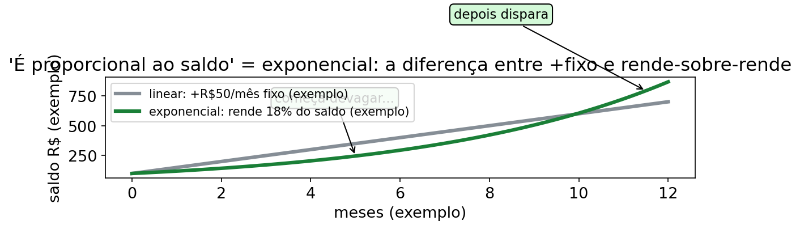
Figura fig20 — Linear × exponencial. Descrição: dois bezerros do curral no mesmo gráfico: curva reta do bezerro A (peso 20+2t, sobe sempre o mesmo degrau) e curva disparando do bezerro B (20e^(0,1t), cada degrau maior que o anterior), com marcações nos meses 0, 10 e 20. Leitura: linear soma o mesmo tanto todo mês; exponencial soma um pedaço de SI MESMA — por isso dispara. No longo prazo do modelo, exponencial sempre vence linear: a reta nunca alcança a curva.
(4) Exemplos resolvidos
GUIA PASSO A PASSO — EDO separável: ganho linear × exponencial
Problema novo do Curral do Capim-Manso (números de exemplo): dois bezerros no piquete Gêmeos-Diferentes. Bezerro A: peso A(t) = 20 + 2t (kg, linear). Bezerro B: dy/dt = 0,1y, com y(0) = 20 kg (exponencial). Quem pesa mais em t = 10 e em t = 20?
Faça junto com a Ana, um passo por linha:
- Ler e marcar: entrada t (meses), saída peso (kg). O bezerro B cresce JUNTO com o peso que tem → EDO separável.
- Escrever a equação antes de calcular: dy/dt = 0,1y, y(0) = 20.
- Separar as variáveis: dy/y = 0,1 dt.
- Integrar os dois lados: ∫ dy/y = ∫ 0,1 dt → ln|y| = 0,1t + C.
- Exponenciar: y = e^C · e^(0,1t) → chamar e^C de C₁ → y = C₁·e^(0,1t).
- Usar a condição inicial: y(0) = 20 → C₁·e⁰ = 20 → C₁ = 20 → y(t) = 20e^(0,1t) → expoente = _____.
- Bezerro A em t = 10: A(10) = 20 + 2·10 = 40 kg.
- Bezerro B em t = 10: y(10) = 20·e¹ ≈ 20·2,718 ≈ 54,4 kg (número de exemplo, aproximação).
- Repetir em t = 20: A(20) = 20 + 40 = 60 kg; y(20) = 20·e² ≈ 20·7,389 ≈ 147,8 kg (número de exemplo).
- Leitura do modelo (fig20): a reta soma
2 kgpor mês; no modelo exponencial, a taxa instantânea em cada momento é0,1do peso atual. Por isso a curva acelera mais e, emt=20, já está cerca de88 kgacima da reta. - Teto (não existe nos dois!): em t = 30, A = 80 kg e y = 20e³ ≈ 401,7 kg (número de exemplo): a reta nunca alcança a curva disparando — linear vence no comecinho, exponencial depois.
- Responder com frase: "em t = 10, B ≈ 54,4 kg contra 40 kg de A; em t = 20, ≈ 147,8 kg contra 60 kg (números de exemplo) — a exponencial supera a linear cedo e não volta atrás".
Lacunas para preencher no caderno:
- Passo 6: y(t) = 20e^(_____)
- Passo 8: y(10) ≈ _____
- Passo 9: A(20) = _____
- Passo 11: em t = 30, y(30) ≈ _____ (use e³ ≈ 20,09)
Checklist (marque quando fizer):
- Separei dy/y de dt antes de integrar (passo 3).
- Usei y(0) para achar a constante, não chutei C₁ (passo 6).
- Comparei A e B no MESMO tempo, com frase + kg (passos 7–9).
- Entendi por que a exponencial dispara: soma um pedaço de si mesma (passo 10).
Gabarito do guia (abrir depois de tentar)
- Passo 6: y(t) = 20e^(0,1t) (número de exemplo).
- Passo 8: y(10) = 20e¹ ≈ 54,4 kg.
- Passo 9: A(20) = 60 kg; y(20) = 20e² ≈ 147,8 kg.
- Passo 11: y(30) = 20e³ ≈ 401,7 kg (números de exemplo, aproximações com e ≈ 2,718).
- Frase-pronta: "os dois modelos partem de 20 kg; a reta soma
2 kgpor mês, enquanto a taxa do modelo exponencial é 10% do peso atual em cada instante (números de exemplo)".
Exemplo 1 — Ganho total a partir da taxa diária (área) (número de exemplo)
Taxa de ganho: g(t) = 1 + 0,5t (kg/dia), t em dias (0 a 12).
∫ de 0 até 12 de (1 + 0,5t) dt
Passo 1 — antiderivada: t + 0,25t². Passo 2 — limites: (12 + 0,25·144) − 0 = 12 + 36 = 48.
Resposta: 48 kg de ganho total no período (número de exemplo). Leitura: a área embaixo da curva de taxa é o acumulado.
Exemplo 2 — dy/dt = ky: biomassa que cresce junto com ela mesma (número de exemplo)
dB/dt = 0,08·B, com B(0) = 200 (kg/ha — número de exemplo).
Passo 1 — reconhecer: k = 0,08 (> 0 → cresce), B₀ = 200.
Passo 2 — fórmula: B(t) = 200 · e^(0,08t).
Passo 3 — pergunta típica: B(12) = 200 · e^(0,96) ≈ 200 · 2,6117 ≈ 522.
Resposta: B(12) ≈ 522 (número de exemplo, kg/ha). Biomassa mais que dobrou em 12 períodos porque o crescimento era proporcional ao próprio tamanho.
Exemplo 3 — dy/dt = −ky: decaimento da qualidade do volumoso (número de exemplo)
dQ/dt = −0,10·Q, com Q(0) = 100 (qualidade relativa em % — número de exemplo).
Passo 1 — reconhecer: k = −0,10 (< 0 → decai), Q₀ = 100.
Passo 2 — fórmula: Q(t) = 100 · e^(−0,10t).
Passo 3 — pergunta típica: Q(30) = 100 · e^(−3) ≈ 100 · 0,04979 ≈ 5,0.
Passo 4 — meia-vida conceitual: t½ = ln(2)/0,10 ≈ 0,693/0,10 ≈ 6,93 períodos.
Resposta: em 30 períodos restam ≈ 5% (número de exemplo); a qualidade cai à metade a cada ≈ 6,93 períodos (conceitual). Nota: parâmetros reais de qualidade de silagem/pasto não estão aqui — só a matemática do decaimento proporcional.
Exemplo 4 — Separando as variáveis passo a passo (número de exemplo)
Resolver dy/dx = 0,02y (crescimento) mostrando o caminho.
Passo 1 — separar: dy/y = 0,02 dx (y de um lado, x do outro).
Passo 2 — integrar os dois lados: ∫ dy/y = ∫ 0,02 dx ln|y| = 0,02x + C.
Passo 3 — desfazer o ln (exponenciar): y = e^(0,02x + C) = e^C · e^(0,02x).
Passo 4 — a constante vira o valor inicial: em x = 0, y = e^C = y₀. → y = y₀ · e^(0,02x).
Resposta: a receita de separação de variáveis reproduz a fórmula que você já vinha usando — agora você sabe de onde ela sai.
Exemplo 5 — NOVO: oferta residual e meia-vida (área + EDO) (número de exemplo)
Duas perguntas da Ana num exemplo só (números de exemplo).
(a) Área: taxa de ganho g(t) = 2 + 0,3t (kg/dia), de 0 a 10 dias. Ganho total?
∫ de 0 até 10 de (2 + 0,3t) dt = [2t + 0,15t²]₀¹⁰ = 20 + 15 = 35 kg.
(b) EDO: oferta residual O(t) com dO/dt = −0,08·O, O(0) = 500 (kg MS/ha, número de exemplo). Quanto resta em t = 10? Qual a meia-vida?
O(t) = 500e^(−0,08t). O(10) = 500·e^(−0,8) ≈ 500·0,4493 ≈ 224,7 ≈ 225. Meia-vida: t½ = 0,693/0,08 ≈ 8,66 períodos.
Resposta: (a) 35 kg acumulados; (b) restam ≈ 225 (número de exemplo) em t = 10; metade some a cada ≈ 8,66 períodos (conceitual). Moral: área soma o que passou; EDO projeta o que resta.
(5) Você faz — 7 exercícios (5 originais + 2 novos)
Ex1. ∫ de 0 até 8 de 20 dt (taxa diária constante de 20 kg)
Ex2. ∫ de 0 até 6 de (10 + 2t) dt (taxa de consumo diário, kg/dia)
Ex3. ∫ de 0 até 10 de 2t dt (taxa de ganho que cresce com o tempo)
Ex4. EDO: dy/dt = 0,05y com y(0) = 400. Escreva y(t) e ache y(20). (Use e¹ ≈ 2,71828.)
Ex5. EDO: dy/dt = −0,05y com y(0) = 1000. Escreva y(t) e ache y(20). (Use e^(−1) ≈ 0,36788.)
Ex6 — NOVO. Arraçoamento acumulado (número de exemplo): taxa r(t) = 3 + 0,2t (kg/dia), de 0 a 20 dias. Calcule o total. Confira com trapézio: r(0), r(20) e (r(0)+r(20))/2 · 20.
Ex7 — NOVO. Decaimento com meia-vida (número de exemplo): dM/dt = −0,12·M, M(0) = 800. Escreva M(t), calcule M(10) com e^(−1,2) ≈ 0,3010 e ache a meia-vida t½ = ln2/0,12.
(6) Gabarito comentado
Ex1 → 160. Antiderivada de 20: 20t. 20·8 = 160 (número de exemplo, kg). Conferência: retângulo 20 × 8 = 160 .
Ex2 → 96.
- Antiderivada: 10t + t² (porque 2/2 = 1).
- F(6) − F(0) = 60 + 36 = 96 (kg).
Ex3 → 100.
- Antiderivada de 2t: t².
- F(10) − F(0) = 100 − 0 = 100. Conferência: triângulo base 10, altura 20 → (10·20)/2 = 100 .
Ex4 → y(t) = 400·e^(0,05t); y(20) ≈ 1087.
- k = 0,05, y₀ = 400 → y(t) = 400 e^(0,05t).
- y(20) = 400·e^(1) ≈ 400·2,71828 ≈ 1087,3 ≈ 1087 (número de exemplo). Leitura: crescimento proporcional (k > 0).
Ex5 → y(t) = 1000·e^(−0,05t); y(20) ≈ 368.
- k = −0,05, y₀ = 1000 → y(t) = 1000 e^(−0,05t).
- y(20) = 1000·e^(−1) ≈ 1000·0,36788 ≈ 367,9 ≈ 368 (número de exemplo). Leitura: decaimento proporcional ao que resta (k < 0). Compare com Ex4: mesmo |k| e mesmo tempo, mas sinal oposto — só o sinal de k muda o destino.
A Vaquera Ana comenta cada passo:
- Micro-passo 1: reconheço a cara dy/dt = k y, com k = -0,05 e y(0) = 1000 (números de exemplo).
- Micro-passo 2: sublinho o sinal primeiro: negativo é decair, não crescer.
- Micro-passo 3: escrevo a fórmula: y(t) = 1000 e^(-0,05t).
- Micro-passo 4: troco t = 20: expoente -0,05 vezes 20 = -1.
- Micro-passo 5: uso e^(-1) ≈ 0,36788 e multiplico: 1000 vezes 0,36788 ≈ 368.
- Micro-passo 6: respondo em frase: "restam ≈ 368 (número de exemplo); k < 0 manda decair à metade aos poucos".
Ex6 — NOVO → 100. Antiderivada: 3t + 0,1t². F(20) = 60 + 40 = 100 (número de exemplo, kg). Trapézio: r(0) = 3; r(20) = 7; (3+7)/2·20 = 5·20 = 100 .
Ex7 — NOVO → M(t) = 800e^(−0,12t); M(10) ≈ 241; t½ ≈ 5,78. M(10) = 800·0,3010 = 240,8 ≈ 241 (número de exemplo). Meia-vida: 0,693/0,12 ≈ 5,775 ≈ 5,78 períodos (conceitual). Interpretação: a cada ~5,78 períodos, resta metade.
Mini-quiz V/F — Unidade 5
- ( ) Se k > 0 em dy/dx = ky, a solução decai.
- ( ) y = y₀e^(kx) resolve dy/dx = ky com y(0) = y₀.
- ( ) Meia-vida conceitual é ln2/|k|.
- ( ) Área sob taxa diária é o total acumulado.
- ( ) Integral de curva abaixo do eixo dá área positiva automaticamente.
Gabarito: 1-F (k>0 cresce). 2-V. 3-V. 4-V. 5-F (dá número negativo; área positiva exige módulo/atenção ao sinal).
CURIOSIDADE — CURIOSIDADE FINAL DA UNIDADE Crescer e decair proporcional são espelhos: e^(+1) ≈ 2,72 contra e^(−1) ≈ 0,37. Some os expoentes: +1 −1 = 0 → e⁰ = 1. Crescer por um tempo e decair pelo mesmo tempo (mesmo |k|) volta ao início. A Ana chama de "ir e voltar no pasto".
(6b) Trilha N0 → N3 da Unidade 5 — 7 exercícios novos
Fala da Ana: "Se o ritmo depende do que tem no pasto, é e elevado a k vezes t. Sinal do k decide se enche ou esvazia."
T1 (N0). k > 0 é crescer ou decair? E k < 0? O que é y₀ em 1 frase cada?
T2 (N0). Na fig06, qual painel é biomassa (k > 0) e qual é qualidade do volumoso (k < 0)? Onde está a meia-vida no desenho?
T3 (N1). y′ = 0,06y, y(0) = 300 (exemplo). Escreva y(t) e ache y(10) com e^0,6 ≈ 1,82212.
T4 (N1). y′ = −0,07y, y(0) = 600 (exemplo). Escreva y(t) e ache y(10) com e^(−0,7) ≈ 0,49659.
T5 (N2 — usa a tabela). Na TABELA DE DADOS FICTÍCIOS DO REBANHO EXEMPLO, peso médio dias 7 (215,7) e 8 (216,9) kg (exemplo): cresceu 1,2 kg em 1 dia. Se o modelo fosse y = 215,7·e^(kt), ache k = ln(216,9/215,7) ≈ 0,0055/dia. A Ana pode chamar de "crescer proporcional" por 1 dia? 1 frase.
T6 (N2 — usa a tabela). Com k = −0,08 (exemplo), calcule a meia-vida t½ = 0,693/0,08. Em quantos períodos a qualidade fictícia cai à metade? Responda com frase.
T7 (N3 — desafio). Dois piquetes fictícios: A com B(0) = 400 e k = 0,05; B com B(0) = 500 e k = 0,02 (biomassa, exemplo). Após t = 10 (e^0,5 ≈ 1,64872; e^0,2 ≈ 1,22140), qual tem mais biomassa? Diga qual a Ana usa primeiro e por quê.
Trilha U5 — gabarito comentado (T1–T7):
- T1 → k > 0 cresce; k < 0 decai; y₀ = valor em t = 0.
- T2 → esquerda subindo = biomassa; direita descendo = qualidade do volumoso; meia-vida = linha tracejada onde cai à metade.
- T3 → y(t) = 300·e^(0,06t); y(10) ≈ 547. 300×1,82212 ≈ 546,6 ≈ 547 (exemplo).
- T4 → y(t) = 600·e^(−0,07t); y(10) ≈ 298. 600×0,49659 ≈ 297,9 ≈ 298 (exemplo).
- T5 → sim, como aproximação de 1 dia (exemplo). Frase: "de 215,7 para 216,9 kg em 1 dia dá k ≈ 0,0055/dia fictício; vale como taxa proporcional daquele dia, não como lei do mês".
- T6 → t½ ≈ 8,66 períodos. 0,693/0,08 = 8,6625 ≈ 8,66 (exemplo). Frase: "a cada ~8,7 períodos a qualidade cai à metade".
- T7 → A(10) ≈ 659; B(10) ≈ 611. A: 400×1,64872 ≈ 659. B: 500×1,22140 ≈ 611 (exemplos). Ana usa B primeiro (cresce devagar) e guarda A (dispara) por último — decisão de manejo fictícia.
BANCO EXTRA B1–B10 (mistão final, com gabarito)
Fala da Ana: "Prova é aparte: um animal por vez no tronco. Faça B1 a B10 sem olhar, depois confira tudo de uma vez." Todos os valores são números de exemplo (fictícios; sem parâmetro oficial, sem DOI).
B1 (Cap 0). (3/4) + (1/8) = ? E x⁴·x⁵ = ? (número de exemplo).
B2 (U1). lim (x→6) (x² − 36)/(x − 6) = ? E lim (t→∞) (450t)/(t + 10) = ? (teto, exemplo).
B3 (U2). C(x) = 100 + 10x + 0,3x² (kg, exemplo). Ache C′(x) e C′(20).
B4 (U2). Cadeia: G(t) = (4t + 2)⁵ (exemplo). Ache G′(t) e G′(1).
B5 (U3). L(x) = −5x² + 120x − 500 (retorno do lote, exemplo). Ache a lotação ótima e L máxima. Confirme com f″.
B6 (U3). R(x) = 150x; C(x) = 30x + 1800 (exemplo). Ache o equilíbrio R = C.
B7 (U4). ∫ (12x³ + 6x) dx. Depois calcule ∫ de 0 até 7 de (5 + t) dt (kg, exemplo).
B8 (U4). ∫ 4t(t² + 4)² dt por substituição (exemplo). Use u = t² + 4.
B9 (U5). dy/dt = 0,08y, y(0) = 200 (exemplo). Escreva y(t) e ache y(12) com e^0,96 ≈ 2,61170.
B10 (U5 + tabela). Na TABELA DE DADOS FICTÍCIOS DO REBANHO EXEMPLO, leite total dos dias 1–3 = 12,0+12,5+13,0 = 37,5 L (exemplo, confira). Se o consumo MS total dos 3 dias foi 6,2+6,4+6,5 = 19,1 kg (exemplo), qual a razão leite/consumo dos 3 dias? Responda com frase + unidade.
Banco extra — gabarito B1–B10:
- B1 → 7/8; x⁹. (3/4)+(1/8) = 6/8+1/8 = 7/8. x⁴·x⁵ = x⁹ (soma expoentes).
- B2 → 12; 450. (x−6)(x+6)/(x−6) = x+6 → 12. Teto: 450/1 = 450 kg (exemplo).
- B3 → C′(x) = 10 + 0,6x; C′(20) = 22. Em 20: 10 + 12 = 22 kg por cabeça marginal (exemplo).
- B4 → G′(t) = 20(4t+2)⁴; G′(1) = 25920. Casca 5(…)⁴ × 4. Em 1: 20×6⁴ = 20×1296 = 25920.
- B5 → x = 12; L(12) = 220.* L′ = −10x + 120 = 0 → x = 12. L″ = −10 < 0 → máximo. L(12) = −720 + 1440 − 500 = 220 (exemplo).
- B6 → x = 15. 150x = 30x + 1800 → 120x = 1800 → x = 15 (exemplo). Confere: 2250 = 2250.
- B7 → 3x⁴ + 3x² + C; definida = 59,5. 12/4 = 3; 6/2 = 3. Definida: 5t+t²/2 de 0 a 7 = 35+24,5 = 59,5 kg (exemplo).
- B8 → (2/3)(t²+4)³ + C. u = t²+4, du = 2t dt; 4t dt = 2 du; ∫2u²du = 2u³/3 + C.
- B9 → y(t) = 200·e^(0,08t); y(12) ≈ 522. 200×2,61170 ≈ 522,34 ≈ 522 (exemplo).
- B10 → razão ≈ 1,96 L/kg. 37,5÷19,1 ≈ 1,963 ≈ 1,96 L de leite por kg de MS (exemplo). Frase: "nos dias 1–3 cada kg de MS rendeu ~1,96 L (exemplo)".
COMPLEMENTOS V5 — BANCO DE EXERCÍCIOS
Este bloco preserva o livro anterior e acrescenta 30 questões novas, todas com dados fictícios. Os enunciados seguem a ordem leitura de dado/modelo → aplicação → erro/crítica em cada unidade; depois vêm questões integradas e de validade. Os gabaritos obrigam a declarar variáveis, unidades e domínio, método, execução, interpretação, plausibilidade, erro comum e limitação do modelo.
Complementos concisos de Cálculo I
Derivação implícita
Quando x e y aparecem ligados por
F(x,y) = 0, differentiate em relação a x e
mantenha y = y(x) dentro da derivada. Se
F_y(x,y) ≠ 0, então dy/dx = −F_x/F_y. A
hipótese F_y ≠ 0 permite a derivada local; se
F_y = 0, a fórmula falha e o ponto precisa de análise
separada. Exemplos de sanidade: 3G+2M=120 tem
dG/dM = −2/3, porque um aumento de M precisa
ser compensado por redução de G.
Funções trigonométricas
Use (sin x)′ = cos x, (cos x)′ = −sin x,
(tan x)′ = sec²x; todas as identidades trigonométricas
ficam para as duas primeiras. O argumento trigonométrico é medido em
radianos quando se usa essas fórmulas de derivação.
Como cos e sin têm período 2π,
suas derivadas também alternam sinal a cada intervalo de comprimento
π. Antes de calcular, marque se a função é °C,
m, rad ou apenas um índice;
5 cos(πd/6) não pode receber 5 °C/dia sem o
contexto de temperatura.
Derivadas de ordem superior
A derivada n-ésima, f⁽ⁿ⁾(x), obtém-se
derivando a anterior n−1 vezes. A segunda derivada mede a
variação da taxa: f″>0 indica taxa crescente e
f″<0, taxa decrescente, nos pontos em que essa leitura
se aplica. A unidade também muda: se f tem unidade
U, f′ tem U/t, f″
tem U/t², e f⁽ⁿ⁾ tem U/tⁿ. Sinal
de f″=0, sozinho, não prova inflexão; é preciso observar
mudança de concavidade.
Taxas relacionadas
Escolha uma variável de ligação e diferencie a relação em função do
tempo. Em A = xy, dA/dt = x dy/dt + y dx/dt,
pois a regra do produto continua válida: cada parcela mede a
contribuição de um fator enquanto o outro permanece medido. Se
A é constante, os sinais das duas parcelas se oppõem.
Depois de obter a taxa, confira a unidade:
(m²/dia) = m·(m/dia), não m²/dia = m/dia.
Assíntotas verticais e traçado de curva
Uma assíntota vertical x=a aparece quando
f(x) cresce em módulo sem limite quando x→a;
em funções racionais, um denominador que zera sem cancelamento é alerta
imediato. Depois de fatorar e cancelar, se o fator não sobreviver à
simplificação, não há construção de modelo naquele ponto. Para traçar
uma curva: domínio, interseções, assíntotas, limites notáveis, sinal de
f′ para monotonia e de f″ para concavidade, e
por fim limites/extremos. O esboço é consequência desses dados, não
substituto dos dados.
Integração por partes
Use ∫u dv = uv − ∫v du quando um fator derivar de modo
mais simples que o outro. Escolha u como o fator cuja
derivada simplifica e dv como o fator cuja antiderivada é
conhecida. A escolha pode ser revista: integração por partes pode ser
feita em outra ordem. Depois, diferencie a expressão final para
recuperar o integrando; se du = dv original e
dv = du original, houve troca indevida dos papéis. A
unidade da parcela uv deve ser igual à unidade da
integral.
V5-E01 — Unidade 1 · leitura de dado/modelo · conversão alimentar
Enunciado. Um lote fictício tem consumo acumulado
C(x)=0,5x²+8x kg e ganho acumulado G(x)=x kg,
ambos medidos no mesmo intervalo e para x>0 cabeças.
Leia o modelo de conversão alimentar e calcule CA(10).
Gabarito.
- Variáveis, unidades e domínio:
xé a quantidade de cabeças,CeGestão em kg no mesmo intervalo;x>0porque o quociente exige ganho não nulo.CAtem unidadekg de consumo/kg de ganho. - Método: formar
CA(x)=C(x)/G(x), cancelarxsomente parax>0e depois avaliar. - Execução:
CA(x)=(0,5x²+8x)/x=0,5x+8;CA(10)=5+8=13 kg/kg. - Interpretação: no ponto fictício, cada 1 kg de ganho corresponde a 13 kg de consumo.
- Plausibilidade:
kg/kgé cancelável; a razão independe da unidade de cabeça porque o mesmoxé cancelado tanto no consumo quanto no ganho. - Erro comum: cancelar
xe depois aceitarx=0; ali a razão original seria0/0. - Limitação do modelo: o modelo presume consumo e ganho medidos no mesmo intervalo; não representa animais individuais, composição diferente ou atraso entre consumo e ganho.
V5-E02 — Unidade 1 · aplicação · racionamento por partes
Enunciado. A taxa de um lote fictício muda de
programa em t=10 dias: q(t)=6t para
0≤t<10 e q(t)=4t+20 para
10≤t≤20, com q em kg/dia e
t em dias. Determine se há descontinuidade na troca.
Gabarito.
- Variáveis, unidades e domínio:
ttem unidade dia, em[0,20];q(t)temkg/dia. - Método: comparar os limites laterais em
t=10; continuidade exige igualdade entre eles e com o valor definido. - Execução:
q(10⁻)=6·10=60;q(10⁺)=4·10+20=60. A segunda fórmula vale no ponto, logoq(10)=60 kg/dia. - Interpretação: a taxa salta de ritmo, mas não de valor; não há “susto” na quantidade oferecida.
- Plausibilidade: as duas taxas ficam não negativas no domínio, coerente com consumo.
- Erro comum: dizer que a curva tem descontinuidade porque a fórmula muda; troca de expressão não é salto se os limites coincidem.
- Limitação do modelo: a troca suave foi imposta; dados reais poderiam exigir outro critério para o instante de mudança.
V5-E03 — Unidade 1 · erro/crítica · ganho médio e “ganho do dia”
Enunciado. Na tabela fictícia, o peso médio é 215,7 kg no dia 7 e 216,9 kg no dia 8; na mesma linha do dia 8, “ganho do dia” aparece como 1,1 kg/dia. Compare e critique as duas informações.
Gabarito.
- Variáveis, unidades e domínio:
W(d)é o peso médio em kg no diad; a variação entre dias 7 e 8 é medida emkg/dia. - Método: calcular a taxa média pelo quociente de variações e comparar definições; não chamar essa média de derivada instantânea.
- Execução:
(216,9−215,7)/(8−7)=1,2 kg/dia, enquanto a coluna declara1,1 kg/dia. - Interpretação: os números não são necessariamente errados: 1,2 mede a secante entre os dois instantes; 1,1 pode usar outra janela, regra de arredondamento ou média do dia.
- Plausibilidade: ambos têm unidade
kg/diae são próximos, mas a diferença exige metadado. - Erro comum: declarar “a derivada é 1,2” sem observar que só o ritmo médio entre pontos foi calculado.
- Limitação do modelo: duas observações não revelam a
forma de
W′(d)durante o dia nem resolvem a discrepância.
V5-E04 — Unidade 2 · leitura de dado/modelo · acúmulo de leite
Enunciado. A produção acumulada fictícia é
L(d)=25+4d−0,1d² litros, com d em dias.
Calcule o volume no tanque no dia 10, a produção média de 0 a 10 dias e
a taxa instantânea no dia 10.
Gabarito.
- Variáveis, unidades e domínio:
Lestá em L,dem dias eL′em L/dia; use0≤d≤20, onde a taxa do modelo é não negativa. - Método:
L(10)é o acumulado; a média é[L(10)−L(0)]/10; a taxa atual éL′(10). - Execução:
L(10)=25+40−10=55 L; média=(55−25)/10=3 L/dia;L′(d)=4−0,2d, logoL′(10)=2 L/dia. - Interpretação: há 55 L acumulados, mas a produção instantânea no dia 10 é menor que a média do período.
- Plausibilidade: média positiva; a desaceleração é
compatível com
L″(d)=−0,2. - Erro comum: chamar 55 L/dia de taxa; 55 L é volume acumulado.
- Limitação do modelo: a parábola admite volume negativo após certo intervalo e não inclui outras formas de curva; sua adequação a um conjunto de dados precisaria ser verificada.
V5-E05 — Unidade 2 · aplicação · ligação implícita entre ração e ganho
Enunciado. Num cenário fictício,
3G+2M=120, em que G e M são
quantidades acumuladas de ganho e ração, ambas em kg. No instante
analisado, dM/dt=5 kg/dia. Calcule dG/dt.
Gabarito.
- Variáveis, unidades e domínio:
tem dias;G,Mem kg;dG/dt,dM/dtem kg/dia. A relação vale no intervalo considerado. - Método: derivação implícita; differentiate os dois
lados como constantes, mantendo
GeMfunções det. - Execução:
3(dG/dt)+2(dM/dt)=0;3G′+10=0;G′=−10/3 kg/dia. - Interpretação: com
dM/dt=5 kg/dia, o ganho acumulado varia a−10/3≈−3,33 kg/dia. A cada aumento de1 kg/diaemdM/dt,dG/dtdiminui2/3≈0,67 kg/diapara manter a relação. - Plausibilidade: o sinal é negativo porque os dois termos competem dentro da soma fixa.
- Erro comum: trocar o sinal negativo do termo
2Mpor positivo na diferenciação implícita. - Limitação do modelo: a relação é linear e fixa; nada garante que vale instantaneamente fora da janela observada.
V5-E06 — Unidade 2 · erro/crítica · derivada trigonométrica
Enunciado. A temperatura fictícia de um
armazenamento é T(d)=20+5sin(πd/6) °C, em dias. critique a
afirmação “o máximo ocorre em d=6 porque T(6)
parece alto”.
Gabarito.
- Variáveis, unidades e domínio:
dem dias eTem °C; o argumento trigonométrico está em radianos e o modelo tem período 12 dias. - Método: procurar
T′=0e classificar o sinal; o valor alto não prova máximo. - Execução:
T′(d)=5π/6 cos(πd/6). Emd=6,T′(6)=−5π/6<0; o máximo ocorre emd=3, ondeT′(3)=0e o sinal muda de+para−. - Interpretação: em
d=6, a temperatura ainda estava caindo;T(6)=20 °C, valor intermediário. - Plausibilidade: temperatura entre 15 e 25 °C no modelo.
- Erro comum: usar
180°na fórmula de derivada ou escolher máximo apenas pelo valor da função. - Limitação do modelo: a temperatura é uma senoide ideal e não contém ruído, armazenamento, limiar ou tendência.
V5-E07 — Unidade 3 · leitura de dado/modelo · contagem discreta e lotação
Enunciado. Um piquete fictício tem 5000 m² e pode
receber x∈{20,40,60,80,100} cabeças. A densidade admissível
é no máximo 0,02 cabeça/m². Qual é a maior quantidade do conjunto
permitida?
Gabarito.
- Variáveis, unidades e domínio:
xé inteiro no conjunto dado;D=x/5000tem unidade cabeça/m². - Método: resolver
x/5000≤0,02, verificar a restrição e intersectar com o conjunto discreto. - Execução:
x≤100; os candidatos válidos são 20, 40, 60, 80 e 100; máximox=100 cabeças. - Interpretação: a maior contagem fictícia admissível ocupa 0,02 cabeça/m².
- Plausibilidade:
100/5000=0,02, e uma cabeça não pode ser fracionada. - Erro comum: otimizar como se
xfosse real e devolver 100,3 sem checar o conjunto. - Limitação do modelo: a lotação é tratada como limite instantâneo; não inclui mudança de área, consumo ou rotação.
V5-E08 — Unidade 3 · aplicação · área de piquete
Enunciado. Uma cerca fictícia de 240 m deve fechar um retângulo. Determine dimensões e área máxima, verificando a restrição física.
Gabarito.
- Variáveis, unidades e domínio: lados
x,y>0em m; perímetro2(x+y)=240; comy=120−x, o domínio físico é0<x<120. - Método: eliminar uma variável, maximizar
A(x)=xy, derivar e comparar o candidato com o domínio. - Execução:
A(x)=120x−x²;A′=120−2x=0dáx=60;y=60;A=3600 m². Há+antes e−depois, então é máximo. - Interpretação: o quadrado 60 m por 60 m usa toda a cerca e dá a maior área do modelo.
- Plausibilidade: perímetro
2(60+60)=240 m; área positiva e máxima dentro do domínio. - Erro comum: responder só
x=60quando a pergunta pede área e dimensões. - Limitação do modelo: presume retângulo, terreno plano, cerca sem sobreposição e objetivo de área apenas.
V5-E09 — Unidade 3 · erro/crítica · cenário de produção com capacidade
Enunciado. O retorno fictício de um lote é
V(x)=−0,08x²+24x−560, com x em cabeças e
0≤x≤120. Um colega maximizou a parábola e respondeu 150
cabeças. Critique.
Gabarito.
- Variáveis, unidades e domínio:
xé inteiro em cabeças, mas o modelo quadrático foi escrito emxreal; capacidade máxima 120. - Método: derivar, localizar o vértice e verificar se ele pertence ao domínio factível; se o vértice estiver fora, comparar a região factível.
- Execução:
V′=24−0,16x=0dáx=150, fora de[0,120]. No intervalo,V′(120)=4,8>0; o máximo ocorre no extremox=120, comV(120)=1168unidades. - Interpretação: aumentar até a capacidade ainda melhora o retorno no modelo, mas 150 excede a capacidade.
- Plausibilidade: a capacidade é respeitada; a resposta 150 não pertence ao problema.
- Erro comum: aceitar o vértice sem testar a restrição.
- Limitação do modelo: custos e receita são hipotéticos, lineares/quadráticos e não incluem escassez, bem-estar animal ou unidade discreta.
V5-E10 — Unidade 4 · leitura de dado/modelo · acúmulo de leite
Enunciado. A taxa diária fictícia é
r(d)=12+2d L/dia, em 0≤d≤8. Quanto leite foi
acumulado no período? Se o tanque tinha 6 L inicialmente, quanto havia
ao final?
Gabarito.
- Variáveis, unidades e domínio:
dem dias,rem L/dia; a integral resulta em L e a condição inicial em L. - Método: integrar a taxa, aplicar o TFC e só então somar o estoque inicial.
- Execução:
F(d)=12d+d²;F(8)−F(0)=96+64=160 L; tanque final=6+160=166 L. - Interpretação: 160 L novos foram produzidos; 166 L é o total fisicamente presente.
- Plausibilidade: trapézio:
r(0)=12,r(8)=28, média 20 L/dia por 8 dias =160 L. - Erro comum: somar 6 L duas vezes ou colocar
+Cem uma integral definida. - Limitação do modelo: taxa linear perfeitamente constante, sem medição faltante, evaporação ou flutuação.
V5-E11 — Unidade 4 · aplicação · soma ponderada pelo tempo
Enunciado. Num modelo fictício,
N(t)=e^(t/(1 dia)) UA. Calcule a soma
E=∫₀⁶ tN(t)dt, em UA·dia². O fator t dá mais
peso aos dias finais.
Gabarito.
- Variáveis, unidades e domínio:
tem dias,Nem UA eEem UA·dia²;0≤t≤6 dias. O expoentet/(1 dia)é adimensional. - Método: integração por partes com
u=t,dv=e^(at)dt, ondea=1/dia; a derivada detsimplifica e a antiderivativa dee^(at)é conhecida. - Execução:
du=dt,v=e^(at)/a;E=[te^(at)/a]₀⁶dias−[e^(at)/a²]₀⁶dias=(5e⁶+1) UA·dia²≈2018,14 UA·dia². - Interpretação: o integrando dá maior peso aos
tempos finais, quando
Né maior. - Plausibilidade:
t,Nedtmultiplicam para UA·dia²; o resultado excede a simples∫Ndtpor causa do fator temporal. - Erro comum: escolher
u=e^(at)edv=t dt; isso aumenta a dificuldade da integração restante. - Limitação do modelo: crescimento exponencial sem limite de carga, sem discreção e sem significado zootécnico de UA; serve apenas ao cálculo da técnica.
V5-E12 — Unidade 4 · erro/crítica · unidade e interpretação de área
Enunciado. A taxa de consumo fictícia é
c(t)=8+0,2t kg/dia, em [0,10]. Calcule o total
e explique por que usar apenas c(10)·10=100 kg como total
seria uma interpretação errada.
Gabarito.
- Variáveis, unidades e domínio:
tem dias,cem kg/dia; o produtoc(t)dtdeve sair em kg. - Método: integrar a função, não multiplicar apenas o valor final pelo comprimento.
- Execução:
F(t)=8t+0,1t²;F(10)−F(0)=80+10=90 kg. A taxa varia de 8 a 10 kg/dia, não permanece 10. - Interpretação: o retângulo de altura máxima daria 100 kg e ainda assim superestimaria o total correto, 90 kg.
- Plausibilidade: média
(8+10)/2=9 kg/dia;9·10=90 kgconfirma. - Erro comum: somar alturas de retângulos como se fossem alturas independentes, ou esquecer que kg/dia precisa ser integrado no tempo.
- Limitação do modelo: não representa pausas, picos curtos ou medição discreta.
V5-E13 — Unidade 5 · leitura de dado/modelo · decaimento de estoque
Enunciado. Um estoque fictício de ração segue
M(t)=800e^(−0,10t) kg, com t em dias. Quanto
resta em 10 dias e qual é a meia-vida?
Gabarito.
- Variáveis, unidades e domínio:
Mem kg,tem dias,k=−0,10 dia⁻¹,M(0)=800 kg. - Método: substituir o tempo no decaimento e usar
t₁/₂=ln2/|k|. - Execução:
M(10)=800e⁻¹≈294,3 kg;t₁/₂=0,693/0,10≈6,93 dias. - Interpretação: resta cerca de 36,8% do estoque; cada 6,93 dias reduz o que resta à metade.
- Plausibilidade: 800 para cerca de 294 é queda positiva; o expoente é negativo.
- Erro comum: usar
+0,10t, fazendo o estoque crescer, ou dividir 0,693 por−0,10e escrever meia-vida negativa. - Limitação do modelo: presume perda percentual constante, mistura homogênea e nenhuma reposição ou heterogeneidade.
V5-E14 — Unidade 5 · aplicação · cenário de produção com deslocamento
Enunciado. A produção acumulada fictícia
P(t) satisfaz dP/dt=0,04(P+20), com
P(0)=100 kg. Resolva e calcule P(10).
Gabarito.
- Variáveis, unidades e domínio:
Pem kg,tem dias,0,04em dia⁻¹ e20 kgcomo deslocamento do modelo. - Método: tornar
S=P+20proporcional; entãoS′=0,04SeS(0)=120. - Execução:
S=120e^(0,04t);P=120e^(0,04t)−20;P(10)=120e^0,4−20≈159,0 kg. - Interpretação: a produção acumulada cresce de 100 para cerca de 159 kg no cenário fictício.
- Plausibilidade:
P(0)=100,P′>0enquantoP>−20; unidade continua kg após subtrair 20 kg. - Erro comum: resolver como
P=100e^(0,04t), ignorando o termo+20da EDO. - Limitação do modelo: é ilimitado; a EDO admite soluções negativas para outras condições iniciais, mas esta solução permanece positiva e não representa mudança de tamanho nem exaustão de pasto.
V5-E15 — Unidade 5 · erro/crítica · perda constante versus proporcional
Enunciado. Um estoque fictício de 100 kg perde 20 kg
por dia. Um colega escreveu dS/dt=−0,05S porque “20% também
parece razoável”. Critique e proponha o modelo coerente com perda
constante.
Gabarito.
- Variáveis, unidades e domínio:
Sem kg,tem dias; a informação “20 kg por dia” é uma taxa absoluta. - Método: comparar a unidade da taxa informada com a EDO proporcional e, se constante, integrar diretamente.
- Execução: a perda constante é
dS/dt=−20 kg/dia; integrando,S=100−20tkg para0≤t≤5. O modelo−0,05Sperde apenas 5 kg no início, não 20. - Interpretação: cada dia remove a mesma quantidade.
Um modelo exponencial que inicia com perda de 20% seria
S=100e^(−0,20t), cuja taxa instantânea de perda é20e^(−0,20t)kg/dia: vale 10,5 kg/dia quando restam 52,5 kg e 5,25 kg/dia quando restam 26,25 kg. - Plausibilidade: a solução linear chega a zero em 5 dias e não deve ser prolongada sem reposição.
- Erro comum: dividir 20 kg/dia por 100 kg sem justificar uma taxa percentual constante.
- Limitação do modelo: ambos os modelos são simplificações; sem reposição, o linear só vale enquanto o estoque permanece não negativo.
V5-E16 — Questão integrada 1 · ganho médio versus atual
Enunciado. O peso acumulado fictício é
P(t)=200+0,6t² kg, com t em meses. Compare o
ganho médio de 0 a 6 meses com a taxa no mês 6.
Gabarito.
- Variáveis, unidades e domínio:
Pem kg,tem meses; média e derivada têm unidade kg/mês. - Método: usar quociente de acumulados para média e
P′para taxa instantânea. - Execução:
P(6)=221,6; média=(221,6−200)/6=3,6 kg/mês;P′(t)=1,2t, logoP′(6)=7,2 kg/mês. - Interpretação: a taxa atual é o dobro da média do período porque a parábola acelera.
- Plausibilidade:
P″=1,2>0confirma aumento da taxa. - Erro comum: responder 3,6 quando o enunciado pede taxa em 6.
- Limitação do modelo: a parábola não tem teto, o que limita uso em períodos longos.
V5-E17 — Questão integrada 2 · conversão alimentar em escala
Enunciado. Para x>0 cabeças
fictícias, consumo e ganho acumulados são C(x)=0,4x²+5x kg
e G(x)=0,1x²+2x kg. Calcule a conversão em 20 cabeças.
Gabarito.
- Variáveis, unidades e domínio:
x>0cabeças;C,Gem kg no mesmo intervalo;C/Gem kg/kg. - Método: dividir quantidades acumuladas medidas na mesma escala, simplificar e avaliar em 20.
- Execução:
CA=(0,4x+5)/(0,1x+2)após cancelarx;CA(20)=13/4=3,25 kg/kg. - Interpretação: 1 kg de ganho fictício usa 3,25 kg de ração nessa escala.
- Plausibilidade: numerador e denominador têm kg;
3,25 kg/kgequivale a 3,25 kg por kg. - Erro comum: usar média de consumo por cabeça e média de ganho em intervalos diferentes.
- Limitação do modelo: pressupõe homogeneidade e resposta simultânea; não modela variação individual, composição ou digestibilidade.
V5-E18 — Questão integrada 3 · produção acumulada de leite
Enunciado. A taxa de leite fictícia é
r(d)=18+3d−0,1d² L/dia em [0,15]. Calcule
produção acumulada, média diária e taxa final.
Gabarito.
- Variáveis, unidades e domínio:
dem dias,rem L/dia, produção em L;r≥0em[0,15]. - Método: TFC para o total; divisão pelo tempo para média; derivação para taxa final.
- Execução:
F(d)=18d+1,5d²−d³/30;F(15)=270+337,5−112,5=495 L; média=495/15=33 L/dia;r(15)=40,5 L/dia. - Interpretação: a produção ainda aumenta no final, mas mais devagar que antes.
- Plausibilidade:
r′=3−0,2d<0após 15 dias, compatível com desaceleração. - Erro comum: somar 15 vezes 40,5; a taxa final não representa todo o período.
- Limitação do modelo: parábola sem descrição, sem lactação delimitada e sem ruído.
V5-E19 — Questão integrada 4 · otimização com cabeças inteiras
Enunciado. Maximize V(x)=−0,04x²+8x−20
para x∈{20,21,…,100} cabeças fictícias. Calcule a lotação
ótima e o valor correspondente.
Gabarito.
- Variáveis, unidades e domínio:
xé inteiro de cabeças;Vestá em unidade monetária fictícia. - Método: achar o vértice contínuo e depois comparar os inteiros vizinhos, pois a maximização real é discreta.
- Execução:
V′=8−0,08x=0dáx=100;V(99)=379,96eV(100)=380, então o máximo inteiro éx=100. - Interpretação: 100 cabeças fictícias produzem retorno 380; o vértice contínuo coincide com esse inteiro no intervalo considerado.
- Plausibilidade: a restrição inteira foi respeitada e o valor foi calculado, não apenas o ponto crítico.
- Erro comum: reportar o ponto crítico sem comparar com a grade inteira e sem calcular o valor.
- Limitação do modelo: não inclui contrato, biossegurança ou integridade animal; só a função matemática e a grade inteira.
V5-E20 — Questão integrada 5 · área e densidade de lotação
Enunciado. Uma cerca de 180 m fecha o maior retângulo. Se o limite de lotação é 0,04 cabeça/m², quantas cabeças cabem na área máxima?
Gabarito.
- Variáveis, unidades e domínio:
x,yem m,A=xyem m², densidaded=N/Aem cabeça/m²;x,y>0. - Método: maximizar a área com perímetro fixo e então aplicar a restrição de lotação ao valor ótimo.
- Execução:
x+y=90;A=90x−x²;A′=90−2x=0dáx=y=45 m;A=2025 m²;N≤0,04·2025=81 cabeças. - Interpretação: o piquete máximo fictício comporta 81 cabeças na densidade dada.
- Plausibilidade: perímetro 180 m e
81/2025=0,04 cabeça/m². - Erro comum: inverter a densidade em
N=d/A; deve-se usarN=d·A. - Limitação do modelo: considera a geometria e lotação estática, sem rotação, consumo ou variação de área.
V5-E21 — Questão integrada 6 · estoque removido por decaimento
Enunciado. Um estoque fictício de 600 kg segue
S′(t)=−0,12S(t), com S(0)=600 kg. Quanto
permanece e quanto foi removido após 8 dias?
Gabarito.
- Variáveis, unidades e domínio:
Sem kg,tem dias,k=−0,12 dia⁻¹; solução parat≥0. - Método: resolver a EDO e conservar a diferença entre estoque inicial e final.
- Execução:
S(t)=600e^(−0,12t);S(8)=600e^(−0,96)≈229,7 kg; removido=600−229,7≈370,3 kg. - Interpretação: 370,3 kg foram perdidos do estoque; não se pode automaticamente chamar toda perda de consumo.
- Plausibilidade: restante positivo e menor que 600; integral da taxa negativa também fornece a remoção.
- Erro comum: apresentar 229,7 kg como “quantidade removida”; esse é o que resta.
- Limitação do modelo: perda percentual constante, sem medição, reposição ou distinção entre mecanismos.
V5-E22 — Questão integrada 7 · ração por partes
Enunciado. A oferta fictícia é
q(t)=5+0,5t kg/dia para 0≤t<10 e
q(t)=10 kg/dia para 10≤t≤20. Calcule o total
dos 20 dias.
Gabarito.
- Variáveis, unidades e domínio:
tem dias,qem kg/dia; a integral resulta em kg. - Método: quebrar nos pontos de mudança e somar as integrais de cada trecho.
- Execução:
∫₀¹⁰(5+0,5t)dt=[5t+0,25t²]₀¹⁰=75;∫₁₀²⁰10dt=100; total175 kg. - Interpretação: metade do período usa ração crescente e metade usa taxa fixa.
- Plausibilidade: o valor coincide em
t=10(10 kg/dia), então não há salto de oferta. - Erro comum: integrar
5+0,5tnos 20 dias e ignorar a mudança de programa. - Limitação do modelo: supõe programas exatos, sem transições, sobras individuais ou ajustes por lote.
V5-E23 — Questão integrada 8 · densidade evolui no tempo
Enunciado. Um piquete fictício de 4000 m² tem
N(t)=20+0,5t+0,05t² cabeças. Calcule densidade e sua taxa
de mudança em t=10.
Gabarito.
- Variáveis, unidades e domínio:
tem dias,Nem cabeças,D=N/4000em cabeça/m² eD′em cabeça/(m²·dia). - Método: dividir a contagem modelada pela área e derivar a expressão resultante.
- Execução:
D(t)=(20+0,5t+0,05t²)/4000;N(10)=20+5+5=30, logoD(10)=30/4000=0,0075 cabeça/m²;N′=0,5+0,1t, entãoD′(10)=1,5/4000=0,000375 cabeça/(m²·dia). - Interpretação: no instante 10, a densidade fictícia é 0,0075 cabeça/m² e está aumentando.
- Plausibilidade: uma divisão por área positiva mantém unidade; derivada positiva confirma aumento.
- Erro comum: derivar só
Ne esquecer dividir por 4000, persistindo unidade errada. - Limitação do modelo:
N(t)produz valores fracionários e ignora entradas/saídas discretas, variação observada e lotação real.
V5-E24 — Questão integrada 9 · lactação com teto
Enunciado. A produção acumulada fictícia de leite
satisfaz Q′=0,08(50−Q), Q(0)=0, com
Q em L e t em dias. Calcule
Q(10), média diária e taxa de produção no dia 10.
Gabarito.
- Variáveis, unidades e domínio:
Qem L,Q′em L/dia,0,08em dia⁻¹ e 50 L como limite do modelo. - Método: separar a EDO; a taxa é proporcional à distância ao teto, não ao total acumulado.
- Execução:
Q(t)=50(1−e^(−0,08t));Q(10)=50(1−e^−0,8)≈27,53 L; média=2,75 L/dia;Q′(10)=4e^−0,8≈1,80 L/dia. - Interpretação: a produção acumulada cresce, mas a taxa instantânea é menor que a média.
- Plausibilidade:
0<Q<50, eQ′>0; ao longo do tempo a produção se aproxima de 50 L. - Erro comum: resolver
Q=50e^(−0,08t), que tem solução oposta e não satisfazQ(0)=0. - Limitação do modelo: 50 L é um teto artificial e não representa declínio prolongado, cio ou ajuste de curva para todo o período.
V5-E25 — Questão integrada 10 · crescimento com perda constante
Enunciado. Uma biomassa fictícia segue
B′=0,05B−8, com B(0)=100 kg. Resolva e calcule
B(10).
Gabarito.
- Variáveis, unidades e domínio:
Bem kg,tem dias; coeficientes0,05 dia⁻¹e 8 kg/dia. - Método: deslocar o equilíbrio:
S=B−160, pois0,05·160=8; entãoS′=0,05S. - Execução:
S(0)=−60;S=−60e^(0,05t);B=160−60e^(0,05t);B(10)=160−60e^0,5≈61,1 kg. - Interpretação: como
B<160, a perda supera o crescimento proporcional no início; a biomassa diminui de 100 para cerca de 61,1 kg. - Plausibilidade:
B′(0)=0,05·100−8=−3 kg/dia;0<B(10)<100, coerente com a direção calculada. - Erro comum: resolver apenas a parte homogênea como
B=100e^(0,05t), ignorando o termo−8. - Limitação do modelo: sem reposição, a solução torna-se negativa em longo prazo; o valor de equilíbrio de 160 kg não garante viabilidade fora de uma janela curta.
V5-E26 — Validade 1 · conversão com ganho nulo ou negativo
Enunciado. C(t)=5t+10 kg e
G(t)=t(t−4) kg, com t em dias. Determine onde
CA(t)=C(t)/G(t) tem interpretação válida como consumo por
ganho positivo.
Gabarito.
- Variáveis, unidades e domínio:
t≥0dias,C,Gem kg;CAtem unidade kg/kg, mas exigeG>0para leitura física positiva. - Método: analisar o denominador antes de simplificar ou avaliar a razão.
- Execução:
G=0emt=0et=4; para0<t<4,G<0, dando razão negativa apesar deC>0; parat>4,G>0. Emt=5,CA=35/5=7 kg/kg. - Interpretação: a razão é matematicamente definida em 0<t<4, mas não representa consumo por ganho positivo; t=0 e t=4 são indefinidos.
- Plausibilidade: o filtro
t>4elimina denominador nulo e ganho negativo. - Erro comum: cancelar
te aceitart=0; perder a singularidade original. - Limitação do modelo: a razão não corrige ganho negativo nem mede conversão quando não houve ganho.
V5-E27 — Validade 2 · integral de taxa não negativa
Enunciado. Verifique se r(d)=d(10−d)
L/dia permanece não negativa em [0,10] e calcule sua
produção acumulada.
Gabarito.
- Variáveis, unidades e domínio:
dem dias,rem L/dia e a produção em L; o coeficiente do polinômio absorve as unidades do modelo. - Método: testar o sinal da taxa no intervalo e só depois integrar.
- Execução: para
0≤d≤10, os dois fatoresde10−dsão não negativos;r≥0.∫₀¹⁰(10d−d²)dd=[5d²−d³/3]₀¹⁰=500−1000/3=500/3≈166,67 L. - Interpretação: o acúmulo é positivo e igual a
166,67 L, com taxa máxima 25 L/dia em
d=5. - Plausibilidade: a média é 16,67 L/dia, entre os extremos 0 e 25 L/dia.
- Erro comum: usar a altura final em um retângulo ou aceitar taxa negativa fora do intervalo.
- Limitação do modelo: produção exatamente nula nas extremidades e parábola sem prolongamento após 10 dias.
V5-E28 — Validade 3 · domínio da área do piquete
Enunciado. A área A(x)=x(50−x) m² foi
obtida sem registrar domínio. Encontre o máximo fisicamente
interpretável e discuta o que acontece sem a restrição.
Gabarito.
- Variáveis, unidades e domínio:
xe50−xsão lados em m; área exige0≤x≤50, com lados não negativos. - Método: derivar e verificar o candidato e os extremos dentro do domínio físico.
- Execução:
A′=50−2x=0dáx=25;A=625 m². Emx>50,A<0, valor impossível para área. - Interpretação: o máximo físico é um quadrado de 25 m por 25 m.
- Plausibilidade: perímetro 100 m e área 625 m², ambos compatíveis com a cerca fictícia.
- Erro comum: aceitar área negativa ou introduzir
valores de
xfora do comprimento disponível. - Limitação do modelo: retângulo ideal; terreno real pode impor limites adicionais.
V5-E29 —
Validade 4 · solução de equilíbrio em S=0
Enunciado. Resolva S′=−0,15S com
S(0)=0 e explique por que dividir por S
durante todo o raciocínio exige cuidado.
Gabarito.
- Variáveis, unidades e domínio:
Sem kg,tem dias,S≥0; coeficiente em dia⁻¹. - Método: identificar soluções de equilíbrio
S=0antes de separardS/S=−0,15dt. - Execução: se
S(t)=0, entãoS′(t)=0para todot; a solução única da EDO linear comS(0)=0éS(t)=0 kg. - Interpretação: estoque inicialmente vazio não surge por decaimento proporcional.
- Plausibilidade: zero permanece zero e é não negativo.
- Erro comum: separar dividindo por
Se concluir que nenhuma solução existe; a divisão exclui justamente a solução nula. - Limitação do modelo: para
S>0, a EDO descreve perda percentual; em zero, a regra percentual não inicia crescimento nem reposição.
V5-E30 — Validade 5 · dado ausente não é zero
Enunciado. Em quatro dias fictícios, a produção de leite foi 12, 13, 12 e 14 L/dia. A quinta medição está ausente. Compare: (a) média dos quatro dias; (b) média de cinco dias tratando a ausência como zero; (c) estimativa linear pela mudança média de 12 para 14 L/dia.
Gabarito.
- Variáveis, unidades e domínio:
dem dias, taxas observadas em L/dia; o quinto valor é desconhecido, não delimitado numericamente. - Método: distinguir resumo dos dados observados de extrapolação condicional; “ausente” não equivale a zero.
- Execução: quatro dias:
51/4=12,75 L/dia; cinco dias com zero:51/5=10,2 L/dia; mudança média observada=(14−12)/3=2/3 L/dia², estimativa do dia 5=14+2/3=44/3≈14,67 L/dia; média estimada de cinco dias=(51+44/3)/5=197/15≈13,13 L/dia. - Interpretação: 12,75 descreve só o período medido; 13,13 depende da hipótese linear; 10,2 é uma média indevida porque incorpora uma taxa zero sem medição.
- Plausibilidade: 14,67 continua na faixa próxima às observações, enquanto zero cria uma descontinuidade forte.
- Erro comum: completar a tabela com zero e chamar a média resultante de medida.
- Limitação do modelo: a extrapolação linear pressupõe tendência estável e não recupera o valor real ausente; somente nova medição confirma.
F.1 Fórmulas em português comum
| Situação | Fórmula | Em português comum |
|---|---|---|
| Derivada de potência | (xⁿ)′ = n·xⁿ⁻¹ | Desce o expoente, diminui 1 |
| Constante | (c)′ = 0 | Fixo não varia |
| Produto | (u·v)′ = u′v + uv′ | Um vigia o outro |
| Quociente | (u/v)′ = (u′v − uv′)/v² | Briga em cima, quadrado embaixo |
| Cadeia | (f∘g)′ = f′(g)·g′ | Casca derivada × recheio derivado |
| eˣ e ln x | (eˣ)′ = eˣ; (ln x)′ = 1/x | Exponencial é eterna; log vira inverso |
| Antiderivada de potência | ∫ xⁿ dx = xⁿ⁺¹/(n+1) + C, para n≠−1 | Se n=−1, use ln|x| + C; nunca divida por zero |
| TFC | ∫[a→b] f = F(b) − F(a) | Cima menos baixo |
| Crescer/decair | y = y₀·e^(kx) | Começa em y₀; k>0 sobe, k<0 desce |
| Meia-vida conceitual | t½ = ln(2)/|k| ≈ 0,693/|k| | Tempo de cair pela metade |
| Taxa de ganho | P′(t) | Ganho do período, não a média |
| Peso máx. (assíntota) | lim (t→∞) P(t) | Teto da curva de crescimento |
| Conversão alimentar | CA = consumo/ganho | Quociente — derivar com a regra do quociente |
| Ponto de equilíbrio do lote | R(x) = C(x) | Receita igual custo |
| Limite direto | lim (t→a) polinômio = valor em a | Substitui direto |
| 0/0 | Fatorar/racionalizar e cancelar | Álgebra, não botão |
| Razão no infinito | Mesmo expoente → razão dos coeficientes | Olha o maior expoente |
| Sinal → monotonia | f′>0 sobe; f′<0 desce | Teste do sinal |
| Ótimo | f′=0 + conferir + calcular f(x*) | Zerar não basta |
F.2 Checklist de erros (marque o que você já fez)
F.3 Roteiro "quando eu travo"
- Respire. 10 segundos sem olhar a página.
- Releia só a pergunta e marque: ponto/assíntota? taxa? melhor ponto? acumulado? crescer/decair?
- Abra a receita do tópico (receita passo a passo da unidade certa).
- Refaça o exemplo mais parecido deste livro sem olhar o desenvolvimento (só o enunciado). Depois confira.
- Anote o erro no caderno de errata com a classe: descuido (sinal/parêntese), conceito (regra errada), base (fração/potência — volte ao Cap. 0).
- Se travou 2 vezes no mesmo ponto: não é vergonha, é sinal — leve para a missão/monitoria (Onde pedir ajuda).
F.4 Frases-prontas para a prova (responda assim)
- "A taxa de ganho no 6º mês é 8 kg/mês (número de exemplo)."
- "O limite quando t → ∞ é 450 (número de exemplo); a curva tende ao teto, sem atingi-lo."
- "A conversão mínima é 16 (número de exemplo) em x = 8."
- "O consumo total de 0 a 14 dias é 161 kg (número de exemplo)."
- "A solução é y(t) = 400e^(0,05t); em t = 20, y ≈ 1087 (números de exemplo)."
PLANO DE ESTUDO 15 DIAS (30 min/dia)
Regra: 30 minutos diários valem mais que 4 horas na véspera. Se um dia falhar, não dobre no seguinte — apenas pegue o próximo dia da lista (e retome o perdido no fim).
| Dia | Missão (30 min) | Feito? |
|---|---|---|
| 1 | Ler Como usar + Cap. 0 (§0.1–0.4). Refazer M1–M5 de cabeça | |
| 2 | Cap. 0 (§0.5–0.7): função-máquina + M6–M10 + fig01 | |
| 3 | U1: conceito + Receitas A–D + Mapa mental. Só leitura ativa | |
| 4 | U1: Exemplos 1 e 2 resolvidos sem olhar, depois confira + Ex1–Ex2 | |
| 5 | U1: Exemplos 3–6 + Ex3–Ex6 + Ex7–Ex8 novos + mini-quiz | |
| 6 | U2: conceito + tabela de derivadas + Exemplo 1 (ganho de peso) + fig03 | |
| 7 | U2: Exemplos 2 e 3 (produto e conversão) + Ex1–Ex3 + fig07 | |
| 8 | U2: Exemplos 4–6 (cadeia, 2ª derivada, lactação) + Ex4–Ex6 | |
| 9 | U2: Ex7–Ex10 + mini-quiz + revisão das fichas F.1 | |
| 10 | U3: conceito + teste do sinal + Exemplos 1 e 2 (monotonia e piquete) + fig04 | |
| 11 | U3: Exemplos 3–6 + Ex1–Ex3 | |
| 12 | U3: Ex4–Ex8 + mini-quiz + checklist de erros (F.2) | |
| 13 | U4: conceito + Exemplos 1 e 2 + Ex1–Ex3 + fig05 | |
| 14 | U4: Exemplos 3–6 + Ex4–Ex8 + mini-quiz | |
| 15 | U5: Exemplos 1–5 + Ex1–Ex7 + mini-quiz + ficha inteira + autoavaliação |
Modo emergência (se só restarem 3 dias): dia 1 = Cap. 0 + U2 (derivadas são o coração); dia 2 = U3 (aplicações) + U4 (integrais); dia 3 = U1 + U5 + fichas de bolso.
Como marcar: → ◐ (comecei) → (fiz + conferi gabarito). A Ana marca com caneta verde o que acertou de primeira e de amarelo o que foi para a errata.
AUTOAVALIAÇÃO FINAL (saia do achismo)
Dê nota 1–5 (1 = "nem vi", 5 = "explico para um colega"). Se algum item ≤ 3, volte à unidade indicada.
| # | Sei fazer… | Nota | Voltar |
|---|---|---|---|
| 1 | Limite direto por substituição | /5 | U1 Ex1 |
| 2 | Desindeterminar 0/0 fatorando/racionalizando | /5 | U1 Ex2, Ex4 |
| 3 | Limite no infinito (razão de polinômios) e teto assintótico | /5 | U1 Ex3, Ex5 |
| 4 | Continuidade e limites laterais (achar letra) | /5 | U1 Ex5, Ex6 |
| 5 | Derivar potência/soma e avaliar no ponto | /5 | U2 Ex1, Ex2 |
| 6 | Produto, quociente e cadeia sem trocar sinal/recheio | /5 | U2 Ex3–Ex7 |
| 7 | Segunda derivada e aceleração/desaceleração | /5 | U2 Ex5-novo-conceito |
| 8 | Teste do sinal e intervalos de crescimento | /5 | U3 Ex1, Ex5 |
| 9 | Otimização com restrição (piquete) + valor ótimo | /5 | U3 Ex2, Ex7 |
| 10 | Taxa marginal e ponto de equilíbrio | /5 | U3 Ex4, Ex6 |
| 11 | Antiderivada de potência + C e conferência derivando | /5 | U4 Ex1–Ex3 |
| 12 | Integral definida (TFC, cima menos baixo) + geometria | /5 | U4 Ex4, Ex5 |
| 13 | Substituição simples (achar u/du e voltar) | /5 | U4 Ex6, Ex8 |
| 14 | Área sob taxa (total acumulado) | /5 | U5 Ex1–Ex3, Ex6 |
| 15 | EDO dy/dx = ky: fórmula, sinal de k, meia-vida | /5 | U5 Ex4, Ex5, Ex7 |
Leitura da nota:
- 65–75: pronto para prova; revise só a errata.
- 50–64: refaça os exemplos NOVOS de cada unidade + mini-quizzes.
- Abaixo de 50: volte ao Cap. 0 e refaça o Plano dias 3–15 sem pressa. Não é vergonha — é método.
Fala da Ana: "Eu fiz essa tabela antes da prova e descobri que meu 2 era quociente. Fiz 10 quocientes em 2 dias. Passei. Moral: avalie para atacar, não para se punir."
GLOSSÁRIO (25 termos, em português comum)
- Acumulado — total somado até certo ponto (peso, consumo, leite). É o que a função devolve.
- Antiderivada — função cuja derivada é a dada. Desfazer a derivada. Leva + C na indefinida.
- Assíntota horizontal — teto que a curva se aproxima quando t → ∞, sem necessariamente atingir.
- Cadeia (regra da) — para função dentro de função: deriva a casca e multiplica pela derivada do recheio.
- Conjugado — par (√A−√B)(√A+√B) = A−B. Amigo da racionalização em 0/0 com raiz.
- Constante de integração (C) — pedaço inicial desconhecido (peso inicial, por exemplo). Derivada de constante é 0.
- Continuidade — curva sem pulo nem buraco no ponto: esquerda = direita = valor.
- Conversão alimentar (CA) — neste livro, razão didática consumo/ganho (números de exemplo). Deriva-se com quociente.
- Derivada — taxa instantânea: quanto muda agora. Símbolos f′(x), dy/dx.
- Derivada segunda — derivada da derivada. Diz se a taxa acelera (positiva) ou desacelera (negativa).
- EDO separável — equação com derivada que dá para separar (y de um lado, x do outro) e integrar os dois lados.
- Exponencial (e^(kt)) — solução de dy/dx = ky. Base e ≈ 2,71828.
- Fatorar — escrever como produto para cancelar o fator que causa 0/0. Ex.: x²−25 = (x−5)(x+5).
- Função — máquina entrada → saída. Ex.: P(t) = peso acumulado até t.
- Indeterminação 0/0 — sinal de que precisa de álgebra, não de chute. Fatore/racionalize.
- Integral definida — número acumulado de a até b: F(b) − F(a). Área com sinal.
- Integral indefinida — família de antiderivadas + C.
- Limite — valor de aproximação quando a entrada chega perto de um ponto ou cresce sem parar.
- Limites laterais — aproximação pela esquerda (⁻) e pela direita (⁺). Precisam concordar.
- Máximo/mínimo — pontos onde f′ troca de sinal (+→− máximo; −→+ mínimo). Sempre calcule o valor f(x*).
- Média do período — [F(b)−F(a)]/(b−a). Não é a derivada. Não confunda.
- Meia-vida (conceitual) — tempo para cair à metade: ln2/|k| ≈ 0,693/|k|.
- Ponto crítico — onde f′ = 0 ou não existe. Candidato a ótimo — precisa conferir.
- Produto/quociente (regras) — produto: u′v+uv′; quociente: (u′v−uv′)/v².
- Taxa marginal — derivada do total: quanto a próxima unidade (cabeça, kg) adiciona.
- TFC (Teorema Fundamental do Cálculo) — derivar e integrar se desfazem: ∫[a→b] f = F(b) − F(a).
ONDE PEDIR AJUDA
10.1 Missões e errata (seu sistema de sobrevivência)
- Errata ativa: tenha um caderno (ou arquivo) só de erros. Registre: o que errei → por que errei → como acerto da próxima. Releia antes de cada prova.
- Missões gamificadas do pacote MAT 146: o jogo
CÁLCULAQUEST (arquivo
jogo/01_REGRAS_CALCULAQUEST.mddo pacote) tem cartas de desafio por unidade, cartas de poder (fórmulas) e XP. Jogue com o time da turma — é prática deliberada com riso liberado. - Banco de questões:
00_geral/06_BANCO_QUESTOES_NUCLEO.md(núcleo) +zootecnia/03_QUESTOES_CONTEXTUALIZADAS.md(contexto do seu curso). - Diagnóstico e remediação:
00_geral/03_DIAGNOSTICO_BASE_MAT.md— se a base (fração/potência) estiver furada, remedie antes de cobrar mais conteúdo.
10.2 Com quem falar
- Colegas do time (ensino entre pares — explicar é aprender).
- Monitoria / plantão do departamento — leve a errata, não a folha em branco.
- Docente da disciplina — vá com um problema tentado (nunca com "não sei nada").
- Este livro: qualquer dúvida de roteiro, volte à receita do tópico e ao gabarito comentado.
- Parâmetros de manejo, dose e taxa biológica real: suas disciplinas da área (manejo, nutrição, produção animal) — não o Cálculo.
10.3 Divergência com a disciplina oficial
Este livro é material didático de apoio do pacote MAT 146. Se algum conteúdo, peso de prova, bibliografia ou sequência divergir do que for ministrado em aula:
Vale sempre o programa analítico oficial da UFV e as orientações do(a) docente. Programa Analítico (catálogo 2025): https://www3.dti.ufv.br/dti/catalogo/programa-analitico/60403
Em caso de dúvida de escopo: ementa oficial > este livro > qualquer grupo de WhatsApp.
10.4 Ajuda rápida por sintoma (índice da Ana)
| Sintoma | Remédio | Onde |
|---|---|---|
| "Travo em fração/potência" | Cap. 0 + M1–M10 | Cap. 0 |
| "0/0 me paralisa" | Fatorar/racionalizar | U1 Receita B, Ex2/Ex4 |
| "Não sei se é média ou derivada" | Sublinhar "médio" vs "agora" | U2 Ex1, F.4 |
| "Troco sinal no quociente/cadeia" | Refazer com UMA regra por linha | U2 fig07, F.2 |
| "Acho x* e paro" | Calcular f(x*) sempre | U3 Receita B |
| "Esqueço + C / inverto F(b)−F(a)" | F.1 + F.2 | U4 |
| "Troco k na EDO" | Sublinhar sinal antes | U5 Receita B |
| "Não sei o que a questão pede" | 5 passos do Cap. 0 | §0.6, F.3 |
ANEXO V3 — FIGURAS E EXPANSÃO
Expansão v5 (passo a passo extra + ilustração): 5
banners de unidade (U1–U5) + 6 figuras novas (fig15–fig20, com leitura
em 2 linhas cada) + 5 guias GUIA PASSO A PASSO (limite
no ganho de peso; mínimo da conversão alimentar; lotação ótima do
piquete; leite acumulado da lactação; ganho linear × exponencial na EDO
separável), cada guia com problema novo do curral fictício, 10–12 passos
com conta completa, 3–4 lacunas _____, checklist e
gabarito em <details>. Todo número novo é
número de exemplo.
Expansão v3 (básico ao complexo): trilhas N0→N3 com 7 exercícios novos por unidade (U1–U5 = 35) + banco extra B1–B10 (10) + TABELA DE DADOS FICTÍCIOS DO REBANHO EXEMPLO (12 linhas) + seção "Unidades (kg, L/dia, UA) e leitura de tabelas". Todo número novo é número de exemplo.
Se algum arquivo de figura ainda não existir na pasta, use a descrição textual abaixo de cada chamada como leitura alternativa. O conteúdo técnico não depende da imagem.
Aviso de números fictícios (vale para o livro inteiro): todos os exemplos numéricos são números de exemplo (fictícios, didáticos). Nenhum dado oficial, parâmetro de manejo, exigência nutricional, taxa biológica real ou referência bibliográfica é afirmado. Não foram inventados DOIs, estatísticas ou citações. Guia fictícia Vaquera Ana. Vale sempre o programa analítico oficial da UFV.
ENCERRAMENTO DA ANA
Fim de tarde no Capim-Manso. A Ana fecha o caderno: limite (teto e pulo), derivada (velocímetro), otimização (melhor ponto), integral (soma de fatias), EDO (crescer/decair). "Não decorei parâmetro nenhum — e nem precisava. Aprendi a estrutura. O resto o campo ensina."
Ela guarda a caneta verde e a amarela, confere a cerca do piquete quadrado e diz:
"Nos vemos na prova. Leve a errata, a ficha de bolso e a frase completa com unidade. E lembre: número aqui é de exemplo — o que vale é o raciocínio."
Pacote MAT 146 — Cálculo I (UFV) · Livro Didático Interativo · Zootecnia · Exemplos numéricos fictícios rotulados "número de exemplo" · Material didático de apoio — não substitui o programa analítico oficial.
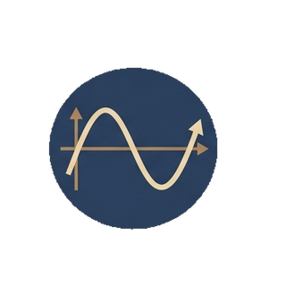
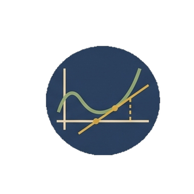